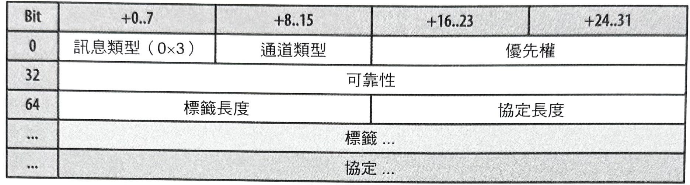

1-18-17 WebRTC
「網頁即時通訊」（Web Real-Time Communication, WebRTC）
是一種標準、協定、和 JavaScript API
的集合，而這樣的組合讓瀏覽器（對等裝置或角色）之間可以進行
P2P
（peer-to-peer，對等式）音訊、視訊，和資料的共享處理。為了取代需要依靠第三方外掛程式或專用軟體的方式，WebRTC
把即時通訊變成一個標準功能，而讓任何的網頁應用程式都可以透過一個簡單的 JavaScript
API，來進行各種即時通訊作業。
要進行音訊（
audio
）和視訊（
video
）遠距會議之類的豐富、優質、具
RTC
的應用，以及對等式資料交換作業的傳輸作業，都需要在瀏覽器提供大量的新功能：音訊和視訊的處理能力、新的應用程式
API，以及許多新的網路協定的支援能力。所幸，瀏覽器把大部分的這類複雜度，都抽象化地隱藏到三個主要
API 的背後：
- Mediastream： 音訊和視訊串流的獲取作業。
- RTCPeerConnection： 音訊和視訊資料的通訊作業。
- RTCDataChannel： 任何應用程式資料的通訊作業。
所有的處理作業都只需要十幾行 JavaScript 代碼，而任何的網頁應用程式就可以搭配對等式資料傳輸方式，來進行一項豐富的遠距會議體驗。那就是 WebRTC 的可能性和威力！然而，剛剛列出的 API 就只是冰山的一角：新協定的信號處理、對等端點的探查、連線協商，安全性，以及整個層級，都是要把它們全部結合一起運作時，所需要用到的其中幾個組件。
無疑地，驅動 WebRTC
的架構和協定決定了它的效能特性：例如，連線設定延遲、協定成本，以及傳輸語義等等。事實上，與所有的其他瀏覽器通訊方式所不同的是，WebRTC
會透過
UDP
來傳輸它的資料。然而，
UDP
也只是一個起點而已。它會透過大量的原始
UDP
，來進行瀏覽器中的即時通訊處理。讓我們更進一步地來看一下。
仍然在建構中的標準
WebRTC 已經有 10 億個以上的使用者：最新的 Chrome 和 Firefox 瀏覽器都會為他們的所有使用者提供 WebRTC 支援能力！然而，WebRTC 仍然是一個正在積極建構中的標準，包括在瀏覽器 API 層級，以及傳輸和協定層級的方面。因此，在本章後續內容裡所討論到的特定 API 和協定，在未來都有可能會有所改變。
WebRTC 的標準與發展
啟用瀏覽器裡的即時通訊（real-time communication）是一種有抱負的作為，而且是很早之前就備受爭議的網頁平台的最重要附加功能之一。WebRTC 脫離一般的「客戶端對伺服器」（client-to-server）的通訊模式，而這會造成要對瀏覽器中的整個網路層級進行重新打造的繁瑣處理，以便針對音訊和視訊的有效即時處理需求，帶來一套嶄新的媒體堆疊。
因此，WebRTC 架構由十幾種不同的標準組成，涵蓋了應用程式和瀏覽器的 API，以及為了讓它運作起來所需的許多不同協定和資料格式：
- W3C 的 WebRTC（Web Real-Time Communication，網頁即時通訊）工作小組 負責定義瀏覽器 API 的部分。
- RTCWEB（Real-Time Communication in Web-browsers，網頁瀏覽器裡的即時通訊功能） 則屬於 IETF 工作小組，負責定義協定、資料格式、安全性，以及用來啟動瀏覽器裡的對等式通訊作業的所有其他必要部分。
WebRTC 並不是一項目標未明的標準。儘管它的主要目的是能夠在瀏覽器之間進行即時通訊，但它也被設計成要能夠與現有的通訊系統進行整合：包括了 IP 語音（voice over IP, VoIP）、各種 SIP 客戶端，甚至公共切換電話網路（PSTN）等等。WebRTC 標準並沒有定義任何特定的相互操作需求或 API，但它們盡可能地做到能重複使用相同的概念和協定。
換句話說，WebRTC 不僅讓瀏覽器具有即時通訊機制，而且還將網頁的所有能力帶進了電信通訊領域—在 2012 年時，整個產業價值已經高達 47,000 億美元！無疑地，這是個大幅度的發展，而且是許多現有電訊供應商、企業界，和初創公司所密切關注的焦點之一。WebRTC 並非只是個瀏覽器的 API 而已。
音訊與視訊引擎
要在瀏覽器裡啟動豐富遠距會議（teleconferencing）體驗，需要瀏覽器能夠去存取系統硬體，來進行音訊和視訊的擷取作業才行——這部份最好是不需要透過第三方外掛或自訂驅動程式來進行處理，而由瀏覽器本身來提供一套簡單，且一致的 API。然而，原始的音訊和視訊串流還是不夠用的：每個串流必須被進行處理來提高品質和同步化，以致於輸出速率必須在客戶端之間不斷地調整，而出現頻寬和延遲的變動情況。
在接收端的部分，整個處理程序是相反的，而且客戶端必須對串流進行即時解碼處理，並且能夠調整網路抖動和延遲狀況。總之，音訊和視訊的擷取和處理作業是個複雜的問題。然而，所幸 WebRTC 把具有全功能的音訊和視訊引擎帶進了瀏覽器（如圖-1），而讓瀏覽器為我們負責所有的信號處理（signaling）和相關處理工作。
圖-1 ：WebRTC 音訊和視訊引擎
音訊和視訊引擎的完整實作方式和技術細節，是一本專書才足以涵蓋的篇幅，而且已超過本書的討論範圍。若要學習更多訊息，請前往並參考 http://www.webrtc.org 網站內容。
已取得的音訊串流會被進行降噪（noise reduction）和回音消除（echo cancellation）處理後，接著就會被自動地以最佳化的窄頻或寬頻音訊編解碼器（audio codecs）之一，來進行編碼作業。最後，有個特別的錯誤隱匿演算法（error-concealment algorithm），會被用來把網路抖動和封包遺失的負面效果給隱藏起來—那部分只是個嘜頭而已！視訊引擎也會透過最佳化影像品質、取用最佳壓縮和編解碼器設定、套用抖動和封包遺失隱匿處理，以及其他處理作業，來執行類似的處理工作。
所有的處理都是直接由瀏覽器來完成的，而更重要的是，瀏覽器會根據不斷變動中的音訊和視訊串流的參數，以及網路環境的狀況，來動態地調整它的處理管線作業。一旦所有的這些處理工作都完成後，網頁應用程式就會收到最佳化的媒體串流，而它就可以輸出到螢幕和喇叭、轉送給它的對等裝置，或者是使用 HTML5 媒體 API 的其中之一來進行後期處理作業！
搭配 getUserMedia 來取得音訊和視訊
「Media Capture」（媒體擷取）和「Stream」（串流）W3C
規格定義了一套可讓應用程式去對來自平台的音訊和視訊串流，進行請求的新 JavaScript
API，以及一套可用來操作和處理已取得媒體串流的 API。
MediaStream
物件（如圖-2）是能啟用這項完整功能的主要介面。
圖-2 ：MediaStream 會攜帶一個或多個同步軌道
-
MediaStream物件是由一個或多個個別軌道（MediaStreamTrack）所組成。 -
在一個
MediaStream物件裡的軌道會與另一個進行同步。 - 輸入來源可以是麥克風、網路攝影機，或者是來自使用者硬碟，或遠端網路對等節點的一份本地端或遠端檔案。
-
一個
MediaStream的輸出可以被發送至一個或多個目的地：- 一個本地端視訊或音訊元素
- 用來進行後期處理作業的 JavaScript
- 一個遠端對等節點
一個
MediaStream
物件代表一個即時媒體串流，並且讓應用程式代碼能夠取得資料、處理各別的軌道，並指定輸出目標。像噪音消除、等化處理（
equalization
）、影像強化，以及其他更多類似的音訊和視訊處理作業，都是由音訊和視訊引擎自動負責處理。
然而，已取得媒體串流的功能特色會受限於輸入來源的能力：麥克風只能夠發出一個音訊串流，而某些網路攝影機則可以比其他產品產生更高解析度的視訊串流。因此，在瀏覽器裡頭請求媒體串流時，
getUserMedia()
API
允許我們去指定一份必要（mandatory）與選擇性（optional）的限制清單，以便符合應用程式的需求：
<video autoplay></video> <!-- 1 -->
<script>
var constraints = {
audio: true, // 2
video: { // 3
mandatory: { // 4
width: { min: 320 },
height: { min: 180 }
},
optional: [ // 5
{ width: { max: 1280 }
},
{ frameRate: 30 },
{ facingMode: "user" }
]
}
};
navigator.getUserMedia(constraints, gotStream, logError); // 6
function gotStream(stream) { // 7
var video = document.querySelector('video');
video.srcObject = stream;
}
function logError(error) {
console.error("MediaStream error:", error);
}
</script>
- HTML 視訊輸出元素。
- 請求一個必要音訊軌道。
- 請求一個必要視訊軌道。
- 視訊軌道的必要限制列表。
- 視訊軌道的選擇性限制陣列。
- 請求來自瀏覽器的音訊和視訊串流。
-
用來處理已取得
MediaStream的回呼函數。
這個例子說明了經過詳細規劃過的情境之一：我們正在對音訊和視訊進行請求，而且我們指定了必須會被使用到的最低解析度和攝影機類型，以及針對
720p HD
影片格式的選擇性限制清單！
getUserMedia()
API
會負責請求去對客戶端的麥克風和攝影機進行存取，以及取得符合指定限制的串流資料——那就是整個相關處理流程。
提供的 API 也可以讓應用程式去操作個別的軌道、複製它們、修改限制，以及其他更多的處理作業。更進一步地，一旦串流被取得後，我們就可以將它送給各種瀏覽器 API：
- Web Audio API： 啟動瀏覽器的音訊處理作業。
- Canvas API： 允許對個別視訊影格（video frame）進行擷取和後期處理作業。
- CSS3 和 WebGL API： 可以把各種 2D/3D 效果套用到輸出串流上。
簡單來說，
getUserMedia()
是一個可用來取得底層平台的音訊和視訊串流的簡單 API。媒體會被 WebRTC
音訊和視訊引擎，自動地進行最佳化、編碼，和解碼處理，而且會接著被繞徑到一個或多個輸出目標。搭配那樣的程序後，我們在即時遠距會議應用程式的建置工作上就已經完成一半了——我們只需要再把資料繞徑給某個對等節點即可！
更多有關 Media Capture 和 Stream API 的完整功能列表，請前往參考官方 W3C 標準 。
音訊（OPUS）和視訊（VP8）位元速率
在請求來自瀏覽器的音訊和視訊時，要注意一下串流的大小和品質。雖然硬體可能有辦法擷取到 HD（High-definition，高解析度）品質串流，但 CPU 和頻寬也都必須能跟得上才行！目前 WebRTC 實作方式會使用 Opus 和 VP8 編解碼器（codecs）：
- Opus 編解碼器： 用於音訊，支援固定與可變位元速率（bitrate）編碼程序，並需要用到 6~510 Kbit/s 的頻寬。所幸，該編解碼器可以無縫地切換，並調整到各種頻寬。
-
VP8 編解碼器：
用於視訊，所需頻寬根據串流品質而有所不同：
- 720p at 30 FPS： 1.0~2.0 Mbps
- 360p at 30 FPS： 0.5~1.0 Mbps
- 180p at 30 FPS： 0.1~0.5 Mbps
因此，單一組高畫質通話可能需要用到高達 2.5+ Mbps 的網路頻寬。若要增加幾個對等節點（peer），就必須因為額外頻寬和 CPU、GPU，以及記憶體處理需求的關係，而捨棄品質。
即時網路傳輸
即時通訊對時間是很敏感的—這應該不令人意外。因此，音訊和視訊串流應用程式被設計得要能忍受間歇性的封包遺失情況：音訊和視訊編解碼器都可以填補小規模的資料空隙狀況，而讓輸出品質的影響降到最低。同樣地，應用程式必須實作它們自己的邏輯，來彌補攜帶著其他類型的應用程式資料的封包遺失或延遲狀況。即時性（timeliness）和低延遲可能要比可靠性還來得更重要。
音訊和視訊串流，尤其需要適應我們大腦的獨特特性。換句話說，我們非常擅長填補空隙，但是卻對延遲情況非常敏感。把一些變動延遲加入到某個音訊串流裡的話，馬上就會感覺哪裡不太對勁，但是若拋棄其中的幾個取樣資料的話，大多數的人甚至都不會注意到！
對及時性的要求高過可靠度的情況，是 UDP 協定會成為即時資料傳遞上的首選傳輸方式的主要原因。TCP 會傳遞一種可靠，且依序的資料串流：假如有個中間的封包被遺失的話，TCP 就會對在那之後的所有封包都先進行緩衝，並等候一項重新傳送作業，然後再依序地將串流傳遞給應用程式。為了做個比較，以下就是 UDP 所提供的「非服務性」功能：
-
無確訊息延遲保證
不會有確認、重傳、或逾時狀況。
-
無傳輸次序保證
沒有封包序列號（sequence number）、無次序重新安排機制、無線頭阻塞狀況。
-
無連線狀態追蹤機制
不會有連線建立或拆卸的狀態機制。
-
沒有擁塞控制
沒有內建於客戶端或網路回饋機制。
在我們更進一步之前，你可能會想要去複習一下《空協定服務》裡頭，有關 UDP 的內部處理作業（或缺點）。
UDP 對資料的可靠度或次序並不做任何保證，而且每個封包只有在抵達的時候才會傳給應用程式。實際上，它是包覆在由我們的網路堆疊的 IP 層所提供的盡力傳輸模式外的一種輕量包裝方式。
WebRTC 在傳輸層上使用 UDP：延遲和及時性是至關重要的。搭配那樣的方式後，我們就可以把我們的音訊、視訊，和應用程式的 UDP 封包給發送出去，接著我們就可以順利開始了，對嗎？不，事情還沒完。我們還需要一些可用來穿越 NAT 和防火牆的許多層級、針對每個串流的參數協商作業、提供使用者資料的編碼方式、實作阻塞和流程控制作業，以及其他相關處理機制！
UDP 是瀏覽器裡的即時通訊機制的基礎，但若要滿足 WebRTC 的所有需求，瀏覽器還需要用到在它之上的許多協定和服務（如圖-3）。
-
ICE
（Interactive Connectivity Establishment，互動式連線建立）：
RFC 5245
- STUN ：NAT 的議程穿越工具（Session Traversal Utilities for NAT） (RFC 5389)
- TURN ：穿越 NAT 周圍使用的轉播方式（Traversal Using Relays around NAT） (RFC 5766)
- SDP ：議程描述協定（Session Description Protocol） (RFC 4566)
- DTLS ：資料傳輸層安全性（Datagram Transport Layer Security） (RFC 6347)
- SCTP ：串流控制傳輸協定（Stream Control Transport Protocol） (RFC 4960)
- SRTP ：安全即時傳輸協定（Secure Real-Time Transport Protocol） (RFC 3711)
圖-3 ：WebRTC 協定堆疊
ICE、STUN 和 TURN，都是透過 UDP 來建立和維護對等式連線的必要部分。DTLS 會被用來保護對等節點之間的所有資料傳輸安全性；加密機制（encryption）是 WebRTC 的一項必要功能。最後，SCTP 和 SRTP 則是用來進行不同串流的多工處理、提供阻塞和流程控制，以及在 UDP 的上面提供部分可靠傳輸和其他額外服務的應用程式協定。
沒錯，那是一個複雜的協定堆疊，而且顯然，在我們可以談論有關端對端效能之前，我們需要先瞭解一下在每項處理工作底下的運作方式。那將會是一段艱辛的旅程，不過那是本章剩餘部分的重點內容。現在就讓我們開始往下進行。
我們並沒有忘記 SDP！正如我們將會看到的那樣，SDP 是會被用來進行對等式連線參數的協商作業的一種資料格式。然而，有關 SDP 的「意」（offer）和「回應」（answer）處理方式，已經超出本書的說明範圍，因此在協定圖表上就把 SDP 的部分給略過了。
簡介 RTCPeerConnection API
儘管許多協定都會牽涉到對等式連線（peer-to-peer
connection）的設定和維護作業，但是由瀏覽器所暴露出來的應用程式 API 卻相對地簡單許多。
RTCPeerConnection
介面（如圖-4）會負責管理每個對等式連線的整個生命週期。
圖-4 ：RTCPeerConnection API
-
RTCPeerConnection會管理 NAT 穿越程序的整個 ICE 工作流程。 -
RTCPeerConnection會在對等節點之間發送自動化（STUN）持續連線信號。 -
RTCPeerConnection會追蹤本地端串流情況。 -
RTCPeerConnection會追蹤遠端串流情況。 -
RTCPeerConnection會根據需要來觸發自動化串流重新協商作業。 -
RTCPeerConnection會提供必要的 API，來產生連線意圖、接受回應、允許我們能夠針對它的狀態進行查詢作業，以及執行其他處理程序。
總之，
RTCPeerConnection
把所有的連線設定、管理，和狀態全都封裝到一個單一界面裡。然而，在我們深入瞭解
RTCPeerConnection
API 的每個設定選項之前，我們需要先瞭解一下信號和協商機制、「意圖-回應」（
offer-answer
）工作流程，以及 ICE 穿越機制。就讓我們按部就班地來繼續進行後續內容。
DataChannel
DataChannel
API 讓對等節點之間能夠進行任意應用程式資料的交換作業——可以用 WebSocket
的方式來思考，但在對等式處理的情況下，會在底層傳輸方式上搭配自訂的傳輸屬性。每個
DataChannel
都可以被設定來提供底下的處理作業：
- 對發送訊息進行可靠或部分可靠的傳輸作業。
- 對發送訊息進行依序或不按次序的傳輸作業。
不可靠的，且不按次序的傳輸方式，就相當於原始的
UDP
語義。訊息有可能會被送達，也可能不會被送達，而次序則不是重點。然而，我們也可以藉由指定重新傳送的最大數量，或是設定重新傳送的時間限制的方式，來將頻道設定成「部分可靠」的情況：WebRTC
堆疊將會負責其中的確認和逾時處理作業！
頻道的每項設定都擁有它自己的效能特性和限制，而稍後我們將會深入談到這類主題。讓我們先繼續往下進行。
對等式連線的建立方式
啟動一個「對等式連線」（peer-to-peer connection）比起開啟一個
XHR
、
EventSource
，或是一個新的
WebSocket
議程，需要進行更多的處理工作：後三者會仰賴一個定義良好的
HTTP
交握機制，來進行連線參數的協商作業，而且這三者全都隱含著假設目標伺服器都是客戶端可以抵達（連結上）的——也就是說，伺服器擁有一個公開可被路由到的
IP
位址，或是客戶端和伺服器都是位在相同的內部網路上。
相較之下，WebRTC
的對等連線更像是兩個對等節點（peer）各自位於獨立的私人網路當中，並且隱藏在一個或多個
NAT
層的背後。因此，對等節點無法直接連線到彼此。若要啟動一個議程（session），我們必須先收集每個對等節點的可能
IP
和通訊埠（port）、穿越
NAT
，然後執行連接性的檢查作業來找出可行的連線方式，而且，這整個過程甚至無法保證一定會成功。
有關
NAT
對
UDP
與對等式通訊所帶來的挑戰，請參考《UDP 與網路位址轉譯器（NAT）》與《NAT
穿越技術》內容。「用 NAT 穿越」來深入討論透過
NAT
的挑戰，尤其針對
UDP
與對等通訊。
然而，儘管 NAT 穿越程序是我們必須處理的問題，但是我們可能早就已經體驗過了。 當我們開啟一個 HTTP 連線到伺服器時，有一個隱含的假設是：伺服器正在偵聽我們的交握作業；它可能希望拒絕它，但是它仍然會持續偵聽新的連線。遺憾的是，相同的狀況對於一個遠端對等節點來說，就不是這麼一回事了：對等節點可能是處於離線狀態或無法到達、忙碌，或者只是對其他議程所啟動的連線不感興趣而已。
因此，為了建立一個成功的對等式連線，我們必須先解決幾個額外問題：
- 我們必須通知有意開啟對等式連線的其他對等節點，這樣它就會知道要開始偵聽傳入的封包。
- 我們必須在連線雙方上，一致認同對等式連線的可能路由路徑（routing path），並且在對等節點之間轉播這項資訊。
- 我們必須交換有關不同媒體和資料串流的參數的必要資訊—包括協定、使用到的編碼方式，以及其他相關資訊。
所幸，WebRTC 為我們解決了其中一個問題：內建的 ICE 協定會執行必要的路由處理和連線性檢查作業。然而，通知訊息的傳送作業（信號處理）和初始議程協商程序都會留給應用程式來負責處理。
信號處理和議程協商作業
在任何連線性檢查（connectivity check）或議程協商作業（signaling negotiation）可以發生之前，我們必要先知道其他對等節點是否能夠達到，以及它是否有意願去建立連線。我們必須延伸出一個「意圖」（offer），而對等節點則必須傳回一個「回應」（answer）（如圖-5）。然而，現在我們有個兩難的情況：假如另一個對等節點並沒有在偵聽傳入的封包的話，我們要如何將我們的意圖通知給它知道呢？我們至少需要有一個共用的信號處理通道（shared signaling channel）。
圖-5 ：共用信號處理通道
WebRTC 會把信號傳輸方式和協定的選擇權利，委託給應用程式；標準刻意不對信號處理堆疊部分，提供任何的建議或實作方式。為什麼呢？因為這樣就能夠交互使用如下所列的各種驅動著現有通訊基礎建設的其他信號處理協定：
-
SIP （Session Initiation Protocol，議程發起協定）
應用級的信號處理協定，被廣泛使用在 IP 語音（VoIP）和 IP 網路視訊會議上。
-
Jingle
XMPP 協定的信號處理擴充功能，被使用在 IP 語音和 IP 網路視訊會議的議程控制上。
-
ISUP （ISDN User Part，ISDN 使用者部分）
被使用在全球的許多公眾交換電信網路裡的電話呼叫設定上的信號處理協定。
「信號處理通道」可以被看成是在房間裡頭喊叫那樣簡單——也就是說，你的目標對等節點是在喊叫聲音的傳達範圍以內！信號處理媒介和協定的決定權則留給應用程式負責處理。
一個 WebRTC 應用程式可以選擇使用任何現有的信號處理協定和閘道（gateway）（如圖-6），來搭配現有的通訊系統去進行一項呼叫或視訊會議的協商作業——例如，以一個 PSTN 客戶端來啟動一個「電話」呼叫（也就是「打電話」）！或者，它也可以選擇搭配自訂協定來實作自己的專屬信號處理服務。
圖-6 ：SIP、Jingle，以及自訂信號處理閘道
信號處理伺服器可以充當一個現有通訊網路的閘道（gateway），而在這樣的情況下，它會負責透過網路去通知連線意圖的目標對等節點，然後將回應傳回給啟動交換作業的 WebRTC 客戶端。另外，應用程式也可以使用它自己自訂的信號處理通道，而這個通道可能是由用來進行訊息通訊處理的一個或多個伺服器，以及一個自訂協定所組成：假如兩個對等節點都是被連結到相同的信號處理服務上的話，那麼該服務就可以在它們之間來回地傳輸訊息。
Skype 就是以自訂信號處理機制的一個對等式系統的傑出案例：音訊和視訊通訊都是屬於對等式的，但 Skype 的使用者必須先連到使用著它們自己的專屬協定的 Skype 信號處理伺服器，來協助啟動對等式連線。
信號處理服務的選擇
WebRTC 能夠進行對等式通訊，但每個 WebRTC 應用程式也將需要一個信號處理伺服器，來進行連線的協商與建立作業。那麼，有什麼選項可供我們選擇呢？
目前可與 WebRTC 進行交互操作的現有通訊閘道名單，正積極地在成長當中。例如， Asterisk 就是可被全世界的個人企業和大型電信商，針對電信需求來使用的一個熱門、免費，且開放源碼的程式框架。以作為一個可供選用的服務來說，Asterisk 具有一個 WebSocket 模組，而這個模組將允許 SIP 被用來當作一種信號處理協定：瀏覽器會與 Asterisk 閘道建立起一個 WebSocket 連線，然後這兩者就可以交換 SIP 訊息來進行議程協商作業！
此外，假如應用程式不需要與其他網路進行交互操作的話，它就可以很容易地進行自訂信號處理閘道的開發和部署作業。舉例來說，某個網站可能選擇要把對等式音訊、視訊，和資料交換方式提供給它的使用者：這個網站會追蹤使用者的登錄狀況，而且它可以對它的所有線上使用者，保持信號處理連線的開啟狀態。然後，當兩個對等節點想要啟動一個對等式議程的話，網站的伺服器就可以在客戶端之間，進行信號處理訊息的轉達工作。
針對信號處理閘道的部分，並沒有什麼唯一的正確選擇：這個決定是取決於應用程式的需求。然而，在你準備要開始開發自己專屬的方式之前，建議可以先調查一下可用的商用或開放原碼的選項！而且，特別要注意一下底層的信號處理傳輸方式，因為它可能會對信號處理頻道的延遲，以及客戶端和伺服器的成本有顯著的影響；相關細節請參考《應用程式的 API 和協定》。
議程描述設定 (Session Description Protocol, SDP)
假設應用程式實作了一個共用信號處理頻道，那我們現在就可以執行用來啟動 WebRTC 連線，所需要進行的前幾個步驟：
var signalingChannel = new SignalingChannel(); // 1
var pc = new RTCPeerConnection({}); // 2
navigator.mediaDevices.getUserMedia({ audio: true }) // 3
.then(gotStream)
.catch(logError);
function gotStream(stream) {
pc.addStream(stream); // 4
pc.createOffer().then(function (offer) { // 5
pc.setLocalDescription(offer); // 6
signalingChannel.send(offer.sdp); // 7
}).catch(logError);
}
function logError(error) {
console.error("Error occurred:", error);
}
- 初始化共用信號處理頻道。
-
初始化
RTCPeerConnection物件。 - 請求來自瀏覽器的音訊串流。
-
搭配
RTCPeerConnection物件來註冊本地端音訊串流。 - 建立對等節點連線的 SDP（意圖）描述資訊。
- 套用已產生的 SDP，來作為對等節點連線的本地端描述。
- 透過信號處理頻道來發送已產生的 SDP 意圖給遠端對等節點。
我們將會在我們的例子當中，使用無前綴字的 API，因為它們是以 W3C 標準所定義出來的。直到瀏覽器實作方式的最終確定版本為止，你可能都需要針對你偏好的瀏覽器來調整一下相關的程式代碼。
WebRTC 使用 SDP（Session Description Protocol，議程描述協定）來描述對等式連線的參數。SDP 並不負責傳輸任何的媒體部分；換句話說，它是被用來描述代表著連線的一份屬性列表的「議程概要資訊」（session profile）：包括要被進行交換的媒體類型（音訊、視訊，和應用程式資料）、網路傳輸方式，使用到的編解碼器和它們的設定、頻寬資訊，以及其他後設資料。
在上述範例當中，一旦一個本地端音訊串流以
RTCPeerConnection
物件來進行註冊之後，我們就可以呼叫
createOffer()
來產生出被預期議程的
SDP
描述資訊。產生出來的
SDP
裡頭包含有什麼呢？讓我們一起來看看：
#(...略...)
m=audio 1 RTP/SAVPF 111 #1
a=extmap:1 urn:ietf:params:rtp-hdrext:ssrc-audio-level
a=candidate: 1862263974 1 udp 2113937151 192.168.1.73 60834 typ host ... #2
a=mid: audio
a=rtpmap:111 opus/48000/2 #3
a=fmtp:111 minptime=10
#(...略...)
- 含有回饋的安全音訊概要資訊。
-
媒體串流的候選
IP、通訊埠，和協定。 - Opus 編解碼器和基本設定資訊。
SDP
是用來描述被預期議程的屬性資訊的一種簡單的純文字協定（RFC
4568）；在上述範例當中，它提供了已取得音訊串流的描述資訊。所幸，WebRTC
應用程式並不需要直接處理
SDP
。
JSEP
（JavaScript Session Establishment Protocol, JavaScript 議程建立協定）把
SDP
的所有內部作業程序，全都抽離到
RTCPeerConnection
物件上的幾個簡單方法呼叫的後面。
一旦「意圖」（
offer
）被產生出來，它就可以透過信號處理頻道而被發送給遠端對等節點。再一次地，
SDP
被進行編碼的方式，是由應用程式來決定的：
SDP
字串可以像先前所呈現的那樣（當作一個簡單的文字
blob
物件），被直接進行傳輸，或者也可以被編碼成任何的其他格式——例如，
Jingle
協定會提供一種從
SDP
至
XMPP
（XML）形式的映射方式（mapping）。
若要建立一個對等式連線，對等節點雙方都必須遵循一種對稱的工作流程（如圖-7），來對它們的個別音訊、視訊，和其他資料串流的
SDP
描述資訊進行交換處理。
圖-7 ：對等節點之間的「意圖/ 回應」SDP 交換程序

-
發起人（Amy）搭配她自己的
RTCPeerConnection物件來註冊一個或多個串流，並建立出一個「意圖」（offer），然後將它設定為她自己的議程「本地端描述」（local description）。 - 接著，Amy 把產生出來的議程意圖，發送給另一個對等節點（Bob）。
-
一旦意圖被 Bob 接收到，他就會把 Amy 的描述資訊設定成議程的「遠端描述」（remote
description），並搭配他自己的
RTCPeerConnection物件來註冊他自己的串流，接著產生出「回應」SDP 描述，然後再將它設定為議程的「本地端描述」—這看起來似乎有點繁瑣！ - 接著，Bob 將產生出的議程回應，傳回給 Amy。
- 一旦 Amy 接收到 Bob 的 SDP 回應，她就會把他的回應設定成她最初的議程的「遠端描述」。
有了上述的處理過程後，SDP 議程描述資訊就已經透過信號處理頻道來交換了，雙方現在都擁有經過協商，要被進行交換的串流類型和它們的相關設定。我們幾乎準備好要開始進行我們的對等式通訊了！現在，就只剩下幾個細節要處理—那就是連線性檢查和 NAT 穿越程序。
互動式連線建立（Interactive Connectivity Establishment, ICE）
為了建立起一個對等式連線，根據定義，對等節點必須能夠將封包相互地繞徑到其他節點。這個定義表面上看似平淡無奇，但實際上卻很難實現，因為在大多數對等節點之間，存在著許多層的防火牆和 NAT 裝置；相關細節請參考《UDP 與網路位址轉譯器 (NAT)》。
首先，讓我們先以簡單的情況來看：兩個對等節點都位在同一個內部網路裡頭，而它們之間並沒有任何的防火牆或 NAT。若要建立起連線，每個對等節點都可以簡單地對它的作業系統來查詢它自己的 IP 位址（或者在擁有多個網路介面的情況下，會查到多個 IP 位址），並將提供的 IP 位址和通訊埠多元組（tuples）附加到已產生的 SDP 字串上，然後將它傳遞給另一個對等節點。一旦完成 SDP 的交換程序，對等節點雙方就可以啟動一個直接的對等式連線。
先前的「SDP 範例」描述的就是上述情況：「
a=candidate
」那一行為對等節點列出了一個啟動議程的私有 IP
位址（192.168.x.x）；相關細節請參考《被保留的私有網路範圍》。
截至目前都還沒什麼問題。然而，假如一個或兩個對等節點都是位在專屬的私有網路上的話，會是什麼情況呢？我們可以重複之前的工作流程，來探查和嵌入每個對等節點的私有 IP 位址，但這樣的對等式連線顯然不會成功！我們所需要的，就是在對等節點之間有個公開的路由路徑 （routing path）。有了 WebRTC ，它有辦法為我們管理這裡頭絕大多數的複雜部分：
-
每個
RTCPeerConnection連線物件都含有一個「ICE 代理者」（ICE agent）。 - ICE 代理者會負責收集本地端 IP、通訊埠多元組（候選資訊）。
- ICE 代理者會負責執行對等節點之間的連線性檢查。
- ICE 代理者會負責發送連線來保持持續連線狀態。
一旦議程描述資訊（本地端或遠端）被設定好之後，本地端 ICE 代理者會自動開始尋找本地端對等節點的所有可能的候選 IP、通訊埠多元組：
- ICE 代理者會向作業系統查詢本地端 IP 位址。
- 假如有設定好的話，ICE 代理者會對一個外部 STUN 伺服器進行查詢，來取得對等節點的公開 IP 和通訊埠多元組。
- 假如有設定好的話，ICE 代理者會附加 TURN 伺服器，來當作最後憑藉的候選對象。假如對等式連線失敗的話，資料將透過指定的中介裝置來進行轉送處理。
假如你曾經回答過「我的公開 IP 位址是什麼？」之類的問題的話，那你多半都有親自執行過「STUN 查詢」（STUN lookup）功能。STUN 協定讓瀏覽器能夠學會，當它被隱藏到某個 NAT 的後面時，能夠去探詢它自己的公開 IP 和通訊埠；相關細節請參考《穿越技術：STUN、TURN 和 ICE》。
每當有新的候選者（一組 IP 和通訊埠多元組）被發現到的時候，代理者就會自動搭配
RTCPeerConnection
來對它進行註冊，並透過一個回呼函數（
onicecandidate
），來通知應用程式。一旦 ICE
搜集作業完成後，相同的回呼函數就會被引發來通知應用程式。讓我們延伸之前的例子，來進一步地來搭配使用
ICE：
var ice = {
"iceServers": [
{"url": "stun:stun.1.google.com:19302"}, // 1
{"url": "turn:user@turnserver.com", "credential": "pass"} // 2
]
};
var signalingChannel = new SignalingChannel();
var pc = new RTCPeerConnection(ice);
navigator.getUserMedia({ "audio": true }, gotStream, logError);
function gotStream(stream) {
pc.addStream(stream);
pc.createOffer(function(offer) {
pc.setLocalDescription(offer); // 3
});
}
pc.onicecandidate = function(evt) {
if (evt.target.iceGatheringState == "complete") { // 4
local.createOffer(function(offer) {
console.log("Offer with ICE candidates: " + offer.sdp);
signalingChannel.send(offer.sdp); // 5
});
}
};
// 含有 ICE 候選者的意圖：
// a=candidate:1862263974 1 udp 2113937151 192.168.1.73 60834 typ host ... // 6
// a=candidate:2565840242 1 udp 1845501695 50.76.44.100 60834 typ srflx ... // 7
- STUN 伺服器，被設定去使用 Google 的公開測試伺服器。
- 在對等式連線失敗時，會被用來負責轉送資料的 TURN 伺服器。
- 套用本地端議程描述資訊：啟動 ICE 收集程序。
- 訂閱 ICE 事件，並偵聽 ICE 收集完成情況。
- 再次產生出 SDP 意圖（現在會搭配探查過的 ICE 候選者）。
- 對等節點的私有 ICE 候選者（192.168.1.73:60834）。
- 由 STUN 伺服器所傳回的公開 ICE 候選者（50.76.44.100:69834）。
上述範例會使用 Google 的公開展示用的 STUN 伺服器。遺憾的是，單獨只有 STUN 還不夠（請參考《實際的 STUN 和 TURN》），你可能還需要提供一部 TURN 伺服器，以保證原本無法建立起直接的對等式連線的對等節點（大概有 8% 的使用者會有這類情況）的連線性。
舉個例子來說明，ICE 代理者會為我們處理大多數的複雜程序：ICE 收集程序會被自動觸發，而 STUN
查詢會以背景模式執行起來，然後已發現的候選者則會搭配
RTCPeerConnection
物件來進行註冊。一旦完成這個程序，我們就可以產生出 SDP
意圖，並使用信號處理頻道來把它傳送給其他對等節點。
接著，一旦其他對等節點收到 ICE
候選者，我們就準備開始進行對等式連線建立作業的第二個階段：一旦遠端議程描述資訊被設定在
RTCPeerConnection
物件上，那麽該物件現在就會存放著另一個對等節點的一份候選 IP 和通訊埠多元組清單，而 ICE
代理者就會開始進行連線性檢查（如圖-8），以瞭解它是否能夠抵達另一個對等節點。
圖-8 ：WireShark 擷取到的一個綁定著請求和回應的對等式 STUN 的情況

ICE 代理者會發送一個訊息（一個綁定著請求的 STUN），而其他對等節點必須要搭配一個成功的 STUN
回應來做出答覆。假如這項作業完成的話，接著我們最後就會擁有一個對等式連線的路由路徑了！換句話說，要是所有候選者都失敗的話，接著就可能會把
RTCPeerConnection
標示為失敗，或者將連線退回給一個 TURN 轉播伺服器去進行連線的建立作業。
ICE 代理者會在執行候選者連線檢查作業過程當中，自動進行次序的排列和優先權調整作業：
- 本地端 IP 位址會先被進行檢查。
- 接著檢查公開 IP 位址。
- TURN 伺服器則會被當作最後的憑藉。
一旦有連線被建立起來，ICE 代理者就會繼續發出週期性 STUN 請求給另一個對等節點。這樣就可以當成一個持久連線的方式來提供服務了。
是的！就樣本節一開始所提到的，開啟一個對等式連線會比開啟一個
XHR
、
EventSource
，或是一個新的
WebSocket
議程，需要進行更多的處理作業。所幸，大多數的這類工作都將由瀏覽器為我們完成。然而，基於效能上的考量，要特別注意到的是，在我們可以開始傳送資料之前，處理過程可能會在
STUN
伺服器之間，和個別對等節點之間，發生多次的往返傳輸——而那是假定
ICE
協商作業成功的情況下。
增量供給作業（涓流 ICE）
ICE
收集程序幾乎是瞬間進行的：取得本地端
IP
位址很快，但是
STUN
伺服器的查詢作業卻需要用到對外部伺服器的一次往返傳輸，隨後在個別對等節點之間，還會有另一輪的
STUN
連線性檢查。「滑流 ICE」（
trickle ICE
）是
ICE
協定的一種擴充功能，而它允許在對等節點之間，以增量方式進行收集處理和連線性檢查作業。它的核心概念非常簡單：
-
兩個對等節點在沒有
ICE候選者的情況下，進行SDP意圖資訊的交換處理。 -
ICE候選者會在它們被發現到的時候，透過信號處理頻道被發送出去。 -
一旦有新的候選者描述資訊可用時，就會盡快地執行
ICE連線性檢查作業。
總之，在不等候
ICE
收集程序完成的情況下，我們會依靠信號處理頻道來把增量更新資訊，傳送給其他對等節點，以協助提升程序的處理效率。WebRTC
實作部分也非常簡單：
var ice = {"iceServers": [
{"url" : "stun:stun.1.google.com:19302"},
{"url": "turn:user@turnserver.com", "credential": "pass"}
]};
var pc = new RTCPeerConnection(ice);
navigator.getUserMedia({ "audio": true }, gotStream, logError);
function gotStream(stream) {
pc.addStream(stream);
pc.createOffer(function(offer) {
pc.setLocalDescription(offer);
signalingChannel.send(offer.sdp); // 1
});
}
pc.onicecandidate = function(evt) {
if (evt.candidate) {
signalingChannel.send(evt.candidate); // 2
}
}
signalingChannel.onmessage = function(msg) {
if (msg.candidate) {
pc.addIceCandidate(msg.candidate); // 3
}
}
-
在沒有
ICE候補者的情況下發送SDP意圖。 -
在個別的
ICE候選者被本地端ICE代理者發現到的時候，將它發送出去。 -
註冊遠端
ICE候選者，並開始進行連線性檢查作業。
涓流 ICE 會透過信號處理頻道產生出更多流量，但它可以在建立對等式連線的時間需求上，有大幅的改善效果。基於這樣的理由，它也是對所有 WebRTC 應用程式的推薦策略：盡快地發出意圖，然後 ICE 候選者在被發現的時候，就立刻以「滑流 ICE」的方式來進行處理。
追蹤ICE 收集作業和連線性狀態
內建的ICE 框架會管理候選者的探索程序、連線性檢查、持續連線，以及其他相關處理作業。假如一切順利的話，那麼所有的這些工作程序對應用程式來說，都是完全透明的：我們唯一要做的事，就是在初始化 RTCPeerConnection 物伴時，指定適當的 STUN 和 TURN 伺服器。然而，並非所有的連線都會被成功建立起來，因此最重要的關鍵就是要把其中發生的問題分離出來，並加以解決。為了做到這點，我們可以查詢 ICE 代理者，並訂閱（subscribe）它的通知訊息：
var ice = {
"iceServers": [
{"url": "stun:stun.l.google.com:19302"},
{"url": "turn:user@turnserver.com", "credential": "pass"}
]
};
var pc = new RTCPeerConnection(ice);
logStatus("ICE gathering state: " + pc.iceGatheringState); // 1
pc.onicecandidate = function (evt) { // 2
logStatus("ICE gathering state change: " + evt.target.iceGatheringState);
};
logStatus("ICE connection state: " + pc.iceConnectionState); // 3
pc.oniceconnectionstatechange = function (evt) { // 4
logStatus("ICE connection state change: " + evt.target.iceConnectionState);
};
- 記錄目前 ICE 收集狀態。
- 訂閱 ICE 收集事件。
- 記錄目前 ICE 連線狀態。
- 訂閱 ICE 連線狀態事件。
正如其名所示，
iceGatheringState
屬性會回報本地端對等節點的候選者收集程序狀態。
結果，它可能會是以下三種不同狀態的其中一種：
-
new（新增）
物件剛剛被建立出來，並且還沒有進行任何的網路通訊作業。
-
gathering（收集中）
ICE 代理者正在進行本地端候選者的收集作業。
-
complete（完成）
ICE 代理者已經完成收集程序。
另外，
iceConnectionState
屬性會回報對等式連線的狀態（如圖-9），而它有可能會是七種可能狀態的其中一種：
-
new（新增）
ICE 代理者正在收集候選者，並且（或）等候要被提供的遠端候選者。
-
checking（檢查中）
ICE 代理者已接收到在至少一個組件上的遠端候選者，並且正在對候選者組合進行檢查處理，但還沒有找到任何一個連線的狀態。除了檢查處理外，它也可能還在進行收集作業。
-
connected（已連線）
ICE 代理者已經為所有組件找到一個可用連線，但它仍然在進行其他候選組合的檢查程序，以便瞭解是否還有更好的連線。它也可能還在進行收集作業。
-
completed（已完成）
ICE 代理者已經完成收集和檢查作業，並為所有組件找到一個可用連線。
-
failed（已失敗）
ICE 代理者已經完成所有候選組合的檢查作業，並且沒有為至少一個組件找到一個可用的連線（失敗狀況）。連線有可能已經被其他某些組件給取用了。
-
disconnected（斷線）
針對一個或多個組件的即時檢查作業已經失敗。這會比失敗狀態更具威脅性，並且在一個薄弱的網路上有可能會間歇性地引發起來（而且在不需要進行任何處理動作的情況下，會自行解決）。
-
closed（已關閉）
ICE 代理者已經關閉處理程序，而且不會再對 STUN 請求進行任何回應處理。
圖-9 ：ICE 代理者連線性狀態和轉換情況
一個 WebRTC 議程可能會為了傳輸音訊、視訊和應用程式資料，而需要用到多個資料串流。因此，一個成功的連線就是能夠對所有的請求串流，建立起連線性的那一個。更進一步來說，由於對等式連線性天生就存在著不可靠的本質，因此一旦連線被建立起來，並沒有任何保證它會一直穩定地保持那個狀態：連線有可能會在「已連線」和「斷線」之間來回地切換，因為 ICE 代理者會試圖找出最佳可能路徑來重新建立起連線性。
ICE 代理者的首要目標，就是確定在對等節點之間的一種可行的路由路徑。然而，它並不會因此就停在那裡。甚至一旦被建立起連線，ICE 代理者可能會定期地對其他候選者進行嘗試，以瞭解它是否能夠透過某個備用路由路徑，來提供更好的效能。
以 Google Chrome 瀏覽器來檢視 WebRTC 連線狀態
Google Chrome 瀏覽器提供了可用來調查任何 WebRTC
連線的整個工作流程和連線狀態的一個簡單又非常有用的工具：打開一個新的分頁，並載入
chrome://webrtc-internals
。接著，你就可以透過來檢視開啟對等式連線的所有情況（如圖-10），檢視已交換的 SDP
描述內容，以及各種相關資料。
圖-10 ：chrome://webrtc-internals
Chrome
也將會回報每個串流的統計數字，像是可用頻寬、延遲時間、已編碼視訊和音訊串流的比特率，以及更多其他資訊。即使你不在開發
WebRTC 應用程式，你也可能會與某個朋友，或在多個瀏覽器視窗之間，開啟一段 WebRTC
議程，然後就可以試著進入到
chrome://webrtc-internals
看看；它是可讓你熟悉 WebRTC 內部運作情況的一項不可或缺的工具。
將所有的東西全都集結起來
我們已經涵蓋到許多的基礎知識：我們有討論到信號處理、「意圖-回應」運作流程、搭配 SDP 的議程參數協商作業，並深入地瞭解建立一個對等式連線時，所需要知道的 ICE 協定的內部運作方式。最後，我們現在就擁有了，可透過 WebRTC 來建立起對等式連線的所有必要部分。
初始一個 WebRTC 連線
我們已經在前面幾頁的內容當中，一點一滴地帶入了所有的必要部分，而現在讓我們來透過一個完整的例子，來瞭解對等節點在進行 WebRTC 連線的初始化作業上的責任：
<video id="local_video" autoplay></video> 1
<video id="remote_video" autoplay></video> 2
- 本地串流輸出的視訊元素。
- 遠端串流輸出的視訊元素。
- 初始化共用信號處理頻道。
- 初始化對等連線物件。
- 取得本地端音訊和視訊串流。
-
搭配對等節點連線來註冊本地端
MediaStream。 - 把本地端視訊串流輸出至視訊元素（本身的檢視畫面）。
-
產生出可描述對等節點連線的
SDP意圖，並發送給對等節點。 -
透過信號處理頻道，以滑流方式來把
ICE候選者傳給對等節點。 -
註冊遠端
ICE候選者來展開連線性檢查作業。 - 把遠端視訊串流輸出至視訊元素（遠端檢視畫面）。
整個處理流程在一開始看到的時候，可能會讓人有點生畏，但是既然我們瞭解所有部分的運作方式，這一切就變得相當顯而易懂了：將對等節點連線和信號處理頻道進行初始化，接著取得並註冊媒體串流，再發送意圖，然後對 ICE 候選者進行涓流處理，最後再輸出已取得的媒體串流資料。更完整的實作方式可能還會註冊額外的回呼函數來追蹤 ICE 收集程序和連線狀態，並提供更多的回饋給使用者。
當連線被建立起來之後，應用程式仍然可以從
RTCPeerConnection
物件增加或移除串流。每當發生這種情況時，就會引發一次的自動化 SDP
重新協商作業，並重複相同的初始化程序。
回應一個 WebRTC 連線
對一個新的 WebRTC 連線進行請求回應作業的程序是非常相似的，而唯一的主要差別是，大部分的邏輯都是在信號處理頻道傳送 SDP 意圖的時候被執行的。讓我們以一個實際案例來看看：
<video id="local_video" autoplay></video>
<video id="remote_video" autoplay></video>
<script>
var signalingChannel = new SignalingChannel();
var pc = null;
var ice = {"iceServers": [
{"url": "stun:stunserver.com:12345"},
{"url": "turn:user@turnserver.com", "credential": "pass"}
]};
signalingChannel.onmessage = function(msg) {
if (msg.offer) { // 1
pc = new RTCPeerConnection(ice);
pc.setRemoteDescription(msg.offer);
navigator.getUserMedia({ "audio": true, "video": true }, gotStream, logError);
} else if (msg.candidate) { // 2
pc.addIceCandidate(msg.candidate);
}
}
function gotStream(evt) {
pc.addStream(evt.stream);
var local_video = document.getElementById('local_video');
local_video.srcObject = evt.stream;
pc.createAnswer(function(answer) { // 3
pc.setLocalDescription(answer);
signalingChannel.send(answer.sdp);
});
}
pc.onicecandidate = function (evt) {
if (evt.candidate) {
signalingChannel.send(evt.candidate);
}
}
pc.onaddstream = function (evt) {
var remote_video = document.getElementById('remote_video');
remote_video.srcObject = evt.stream;
}
function logError() { ... }
</script>
- 偵聽並處理透過信號處理頻道所傳輸而來的遠端意圖。
- 註冊遠端 ICE 候選者來展開連線性檢查作業。
- 產生描述著對等節點連線的 SDP 回應，並發送給對等節點。
無疑地，這段代碼看起來非常類似。除了會根據一個透過共用信號處理頻道所傳輸而來的意圖訊息，來初始化對等式連線工作流程以外，唯一的主要區別就是，上述代碼會產生出
SDP 回應（透過
createAnswer
），而不是意圖物件。換句話說，這類處理程序是對稱的：初始化對等節點連線，並取得和註冊媒體串流，接著發送出回應、對
ICE 候選者進行涓流處理，而最後再輸出所取得的媒體串流資料。
有了那些處理作業後，我們就可以複製程式代碼，並為信號處理頻道增加實作內容，然後我們就會擁有一個可執行在瀏覽器上的即時對等式視訊和音訊議程的視訊會議應用程式——這當中只使用了不到 100 行的 JavaScript 程式代碼，看起來還蠻不錯的！
搭配 SimpleWebRTC 來初始化 WebRTC 議程
實際上，上述程式代碼可以被弄得更加簡單一些。我們的範例是以手動方式來把所有的必要部分給組合起來，但是我們照理說還能夠用另一個程式庫，來把大部分的處理作業給包裹起來。以一個實際的例子來看， SimpleWebRTC 程式庫就只要如下：
<script src="http://simplewebrtc.com/latest.js"></script>
<div id="local_video"></div>
<div id="remote_video"></div>
<script>
var webrtc = new WebRTC({
localVideoEl: "local_video",
remoteVideosEl: "remote_video",
autoRequestMedia: true
});
webrtc.on("readyToCall", function() {
webrtc.joinRoom("your awesome room name");
});
</script>
這段 JavaScript
會像我們之前的範例那樣，提供相同的視訊會議體驗。然而，這當中並沒有什麼神奇之處；
SimpleWebRTC
只不過是為我們做了一些決定而已。它會在底下搭配一個針對 NAT 穿越機制的公開 STUN
伺服器，來初始化
RTCPeerConnection
，並以
getUserMedia
來請求音訊和視訊串流，再對它自己的信號處理伺服器啟動一個 WebSocket
連線。剩下唯一一個讓應用程式去做的決定，就是定義「房間名稱」（
roomname
），也就是對等節點都必須同意要去啟動的對等式連線。
請查閱 SimpleWebRTC 的相關說明文件。你將會額外發現，這個專案還提供了一個開放原碼的信號處理伺服器，而你可以直接拿來使用，或者用來當作實作你自己的專屬版本時的一項參考。
傳輸媒體與應用程式資料
對等式連線的建立作業需要花費不少功夫。然而，即使客戶端完成「回應-意圖」作業流程，而每個客戶端也都執行了它的 NAT 穿越和 STUN 連線性檢查作業，但我們卻仍然只達成我們在 WebRTC 協定堆疊上的一半工作量而已（如圖-3）。這個時候，對等節點雙方都擁有對彼此開啟，可提供單純資料包（datagram）傳輸作業的原始 UDP 連線，但是那對它本身來說還是不夠的；相關細節請參考《UDP 的最佳化作業》。
在沒有流量控制、擁塞控制、錯誤檢查，以及頻寬及延遲估算等機制的情況下，我們可能很容易就會塞爆網路，而導致對等節點雙方和它們周圍的裝置效能大幅低落。此外，UDP 會以一般明碼的方式來傳輸資料，而 WebRTC 則會要求我們對所有的通訊進行加密處理！
為了解決這個問題，WebRTC 在 UDP 的上面又疊上了幾個額外的協定，以填滿其中的落差：
- DTLS （Datagram Transport Layer Security，資料包傳輸層安全）會被用來針對媒體資料的加密作業，以及應用程式資料的安全傳輸處理上的密鑰協商處理。
- SRTP （Secure Real-Time Transport，安全即時傳輸）會被用來傳輸音訊和視訊串流。
- SCTP （Stream Control Transport Protocol，串流控制傳輸協定）會被用來傳輸應用程式資料。
搭配 DTLS 的安全通訊作業
WebRTC 規格要求，包括音訊、視訊，和自訂應用程式負載內容等所有要被傳輸的資料，在傳輸過程中，都必須要被進行加密處理（encrypted）。TLS（Transport Layer Security，傳輸層安全性）協定顯然是一個相當適合的選項，但它不能被使用在 UDP 傳輸上，因為它得仰賴 TCP 所提供的可靠並依序進行的傳輸方式。所以，WebRTC 會使用有提供同等安全性保證的 DTLS （Datagram Transport Layer Security，資料包傳輸層安全）。
DTLS
被刻意設計得要盡可能接近
TLS
那樣。事實上，
DTLS
就是
TLS
，只是稍微做了一些修改，而讓它能夠相容於
UDP
所提供的資料包運輸方式。更具體來說，
DTLS
會解決以下這些問題：
-
TLS需要有可靠、依序，且分割處理的交握記錄的妥善傳輸作業，來進行通道的協商程序。 -
TLS整體檢查作業（ integrity checks ）可能會在記錄被分割到多個封包的情況下，發生失敗。 -
TLS整體檢查作業可能會在記錄沒有被依序處理的情況下，發生失敗。
有關交握程序和紀錄協定結構的完整討論，請參考《TLS 交握程序》和《TLS 記錄協定》。
對於
TLS
交握程序的調整作業，並沒有什麼簡單的處理方式：每個記錄都具有特定目的，每個記錄也都必須以交握演算法所需要的明確次序來進行發送，而且某些記錄可能很容易就跨越到多個封包。因此，
DTLS
會專門為交握程序實作一個「微型 TCP」（
mini-TCP
）機制（如圖-11）。
圖-11 ：DTLS 交握記錄會攜帶序列和分段偏移資訊
DTLS
藉由對每個交握記錄，加入明確分段偏移值（
fragment offset
）和序列號（
sequence number
）的方式，來擴充基本的
TLS
記錄協定。這解決了要依序傳輸的要求，並允許大型記錄能夠被分割跨到多個封包，並且由另一個對等節點來進行重新組合處理。
DTLS
交握記錄是以
TLS
協定所指定的確切次序來進行傳輸的；任何的其他次序都是錯換的。 最後，
DTLS
還必須應對封包遺失情況：雙方都會使用一個簡單的計時器，以便在某個預期的間隔當中沒有收到回覆的情況下，去進行交握記錄的重新傳送作業。
記錄序列號、偏移值，和重新傳送計時器的組合方式，使得
DTLS
能夠透過
UDP
來進行交握作業（如圖-12）。為了完成這項程序，兩個網路對等節點都會產生自我簽署憑證
（self-signed certificates），然後會遵循正規的
TLS
交握協定來進行。
圖-12 ：透過 DTLS 的對等式交握作業
DTLS
交握作業需要兩次往返才能完成——要特別注意到的是，它會對對等式連線的設定作業增加額外的延遲。
WebRTC
客戶端會為每個對等節點自動產生自我簽署憑證。因此，在這當中並沒有要進行驗證的憑證鏈。
DTLS
會提供加密性（
encryption
）和完整性（
integrity
），但會把驗證作業交付給應用程式；相關細節請參考《加密、驗證與完整性》。最後，在滿足交握需求的情況下，
DTLS
會因為考慮到可能的分段作業，以及正規記錄的失序（
out-of-order
）處理程序關係，而增加兩個重要規則：
- DTLS 記錄必須要能塞進一個單一個網路封包裡頭。
- 加密記錄資料必須使用一個「分組密碼」（block cipher）。
一個正規的 TLS 記錄的大小可能會高達 16KB。TCP 會處理分段和重組作業，但 UDP 並沒有提供這樣的服務。因此，為了避免 UDP 協定的無序和最低語義狀況，攜帶著應用程式資料的每個 DTLS 記錄都必須被塞進一個單一的 UDP 封包裡頭。同樣地，串流密碼機制是不被允許使用的，因為那意味著要記錄資料得依序傳送才行。
身份與驗證作業
在兩個 WebRTC 客戶端之間所執行的 DTLS 交握作業，會仰賴「自我簽署憑證」（self-signed certificates）。因此，憑證本身無法被用來對對等節點進行驗證，因為這當中並沒有存在要進行驗證的明確信任鏈（相關細節請參考《信任鏈與憑證授權機構》）。假如有需要的話，WebRTC 應用程式必須對參與的對等節點執行自己的驗證和身份驗證處理：
- 網頁應用程式可以在設定 WebRTC 議程之前，優先使用其現有的身份驗證系統（例如，需要透過登入程序來驗證使用者）。
- 另外，每個參與對等節點都可以在產生 SDP 意圖/回應時，指定它的「身份提供者」（identity provider）。然後，在接收到 SDP 訊息時，相對的對等節點就可以聯絡指定的身份提供者，來對接收到的憑證進行驗證處理。
後面的「身份提供者」機制在 W3C WebRTC 工作小組裡頭仍然還是處於討論和發展中的部分。有關最新的施行狀態，參閱規格書和郵寄清單上的資訊。
搭配 SRTP 和 SRTCP 來進行媒體的傳輸作業
WebRTC
會提供媒體的取得和傳輸作業，來當作一個完整的託管服務：從相機到網路，然後再從網路到螢幕。WebRTC
應用程式會指定媒體限制來取得串流，然後搭配
RTCPeerConnection
物件來對它們進行註冊（如圖-13）。從那裡開始，其餘的部分則是由 WebRTC
媒體，以及瀏覽器所提供的網路引擎來負責處理：編碼最佳化、封包遺失的處理作業、網路抖動情況、錯誤修復、流量，以及控制等相關作業。
圖-13 ：透過 UDP 上的 SRTP 來進行音訊和視訊的傳輸作業
這種架構的含意是——已經超出了已取得媒體串流（例如，720p 與 360p 視訊）的最初限制的指定方式，因為應用程式並沒有具備視訊要如何被進行最佳化，或者如何傳輸至另一個對等節點的任何直接控制方式。這種設計決策是刻意的：透過某種含有起伏多變的頻寬和封包延遲特性的不可靠傳輸方式，來進行一種高品質即時音訊和視訊串流的傳輸作業，是一種很不尋常的課題。而瀏覽器會為我們解決：
- 無論所提供媒體串流的品質和大小，網路堆疊都會實作它自己的流量和擁塞控制演算法：每個連線都會先以低位元速率（<500Kbps）來啟動串流處理，接著才會開始把串流品質調整到符合可用頻寬的情況。
- 媒體和網路引擎都會在整個連線過程當中，動態地調整串流品質，以適應持續變化的網路情況：例如，頻寬起伏、封包遺失，和網路抖動等狀況。換句話說，WebRTC 會實作它自己的自適性串流機制（adaptive streaming）的變化版本（相關細節請參考《自適性串流機制（Adaptive Bitrate Streaming）》）。
WebRTC 網路引擎無法保證，一個由應用程式所提供的 HD 視訊串流，將會以它原本的高畫質情況來進行傳送：在對等節點之間有可能會出現頻寬不足，或是高封包遺失的情況。換句話說，網路引擎將試圖對提供的串流進行調整，以便符合當下的網路情況。
音訊或視訊串流有可能會採取比原本應用程式所取得的原始串流還要低的品質，來進行傳輸處理。然而，相反的情況就不是這樣了——也就是說，WebRTC 將不會提升串流的品質。假如應用程式提供一個 360p 的視訊限制情況的話，那它就會成為將要使用到的頻寬的一個最大上限（簡單來說，即使擁有更大的頻寬，也不會反過來提高視訊品質）。
WebRTC 的媒體串流最佳化與調整
WebRTC 要如何對每個媒體串流的品質進行最佳化和調整處理呢？事實上，WebRTC 並不是第一個在 IP 網路上，要面臨即時音訊和視訊傳輸功能的實作挑戰的應用。因此，WebRTC 會重複利用 VoIP 電話、通訊閘道，和各種商業與開放源碼通訊服務上，所使用到的那些現有傳輸協定：
-
SRTP（Secure Real-time Transport Protocol，安全即時傳輸協定）
針對透過 IP 網路的音訊與視訊之類的即時資料的傳輸作業，所設計的標準化格式的安全配置方式。
-
SRTCP（Secure Real-time Control Transport Protocol，安全即時控制傳輸協定）
針對一個 SRTP 流量裡的發送者和接收者的統計和控制資訊的傳輸作業，所設計的控制協定的安全配置方式。
「即時傳輸協定」（Real-Time Transport Protocol, RTP）是由 RFC 3550 所定義出來的。然而，WebRTC 要求在傳輸過程中，所有的通訊作業都必須被進行加密處理。因此，WebRTC 會使用到 RTP 的「安全配置方式」（secure profile）（RFC 3711），所以，在 SRTP 和 SRTCP 裡頭都含有「Secure」（安全）的「S」。
SRTP 針對透過 IP 網路的音訊和視訊傳輸作業，定義了一個標準封包格式（如圖-14）。就其本身而言，SRTP 並沒有在傳輸資料的即時性、可靠性，或錯誤修正上，提供任何的機制或保證。相反地，它只是把數位化音訊取樣和視訊影格，與可協助接收者處理每個串流的額外後設資料，包裹在一起而已。
圖-14 ：SRTP 標頭（12 個位元組＋負載內容和選擇性欄位）
-
每個
SRTP封包都會攜帶一個自動遞增序列號（sequence number），以便讓接收者能夠偵測並處理媒體資料的無序傳輸狀況。 -
每個
SRTP封包都會攜帶一個時間戳記（timestamp），以表示媒體負載內容的第一個位元組的取樣時間。這項時間戳記會被運用在視訊和音訊軌道等不同媒體串流的同步化作業（ synchronization ）上。 -
每個
SRTP封包都會攜帶一個SSRC識別資訊，這是一個獨一無二的串流 ID，用來將每個封包與個別媒體串流關聯起來。 -
每個
SRTP封包有可能會存放著其他的選擇性後設資料。 -
每個
SRTP封包都會攜帶一個已加密媒體負載內容，以及一個驗證標籤（authentication tag），以便對已傳輸封包的完整性進行檢驗處理。
SRTP
封包提供了媒體引擎在串流的即時播放上所需要的所有必要資訊。然而，控制個別
SRTP
封包的職責，則交付給
SRTCP
協定來進行，該協定會對每個媒體串流實作一個獨立的外部回饋頻道。
SRTCP
會針對每個
SRTP
封包，追蹤發送和遺失的位元組與封包數量、最後收到的序列號、到達時的抖動狀況，以及其他
SRTP
統計資訊。然後，對等節點會週期性地交換這些資料，並使用它來調整發送速率、編碼品質，以及每個串流的其他參數。
總之，
SRTP
和
SRTCP
都是直接跑在
UDP
上，並且會通力合作來對應用程式所提供的音訊和視訊串流的即時傳輸情況進行調整和最佳化處理。WebRTC
應用程式永遠都不會把
SRTP
或
SRTCP
協定的內部部分給暴露出來：假如你正在建置一個自訂的 WebRTC
客戶端程式的話，那麼你將必須直接處理這些協定，除此之外，瀏覽器會為你實作所有的必要基礎部分。
想多瞭解有關 WebRTC 議程的
SRTCP
統計資訊嗎？請檢查 Chrome 裡的延遲、位元速率，和頻寬的報告資訊；相關細節請參考《以 Google
Chrome 瀏覽器來檢視 WebRTC 連線狀態》。
針對 WebRTC 來調整 SRTP 和 SRTCP
我們對
SRTP
和
SRTCP
所做的簡要介紹，涵蓋了每個協定的重點部分，但對實作者而言，還有為了讓這些協定與 WebRTC
需求相容所必須考慮到的許多額外細節：
-
SRTP和SRTCP都會對應用程式的負載內容進行加密處理（這是 WebRTC 的一項需求），但這兩個協定都沒有提供可用來協商安全密鑰的機制！這就是為什麼DTLS交握程序必須先執行的原因：DTLS交握作業會在對等節點之間建立起一個共用安全通道，以便被重複使用在SRTP和SRTCP裡頭的內容密鑰處理上。 -
SRTP和SRTCP都需要把每個個別串流的通訊埠給獨立出來，而這對於隱藏在NAT或防火牆後面的客戶端會是個問題。若要解決這個問題，WebRTC 會使用一個額外的多工處理擴充功能，來啟動在相同目標通訊埠上的多個串流（以及它們的控制頻道）的傳輸方式。 -
IETF工作小組也正在發展新的擁塞控制演算法，而這個演算法會利用SRTCP回饋，來對 WebRTC 應用程式所產生的音訊和視訊串流的傳輸作業，進行最佳化處理。
總之，除了單純搭配數位化音訊和視訊資料來發送
UDP
封包以外，還有許多相關處理得進行！所幸，WebRTC
媒體和網路引擎都能為我們負責掌控所有的這類複雜性。
SRTP
和
SRTCP
效能的調整和改進方式，在相關標準和實作上，都還是屬於正在研發中的階段。
搭配 SCTP 來傳輸應用程式資料
除了傳送音訊和視頻資料外，
WebRTC
還允許透過
DataChannel API
，來進行任意應用程式資料的對等式傳輸。我們在上一節所討論到
SRTP
協定，是專門為媒體傳輸所設計的，但遺憾的是，並不適合用來進行應用程式資料的傳輸工作。因此，
DataChannel
得仰賴執行在對等節點之間的已建立
DTLS
通道上面（如圖-3）的串流控制傳輸協定（
Stream Control Transmission Protocol, SCTP
）來進行處理。
然而，在我們深入瞭解
SCTP
協定之前，讓我們先來為
RTCDataChannel
介面和它的傳輸協定，檢視一下
WebRTC
需求：
-
傳輸必須支援多個獨立通道的多工處理機制（multiplexing）。
- 每個通道必須支援依序或無序傳輸方式。
- 每個通道必須支援可靠或不可靠傳輸方式。
- 每個通道可以擁有應用程式所定義的一個優先權等級。
-
傳輸必須提供一個訊息導向式（message-oriented）API。
- 每個應用程式訊息都可以在傳輸上進行分割和重組處理。
- 傳輸必須實作流量與擁塞控制機制。
- 傳輸必須提供以傳輸資料的機密性和完整性。
所幸，採用 DTLS 就已經滿足最後一個條件：所有應用程式資料都是在記錄的負載內容裡頭被進行加密處理的，因此機密性和完整性都是有保證的。然而，其餘需求部分，則是要去滿足的一種不尋常的組合！UDP 會提供不可靠的無序資料包傳輸方式，但我們還需要類似 TCP 的可靠傳輸、通道多工處理、優先權支援、訊息碎片化等等的支援能力—這就是為什麼會出現 SCTP 的原因。
表-1 ：比較 TCP、UDP 和 SCTP
SCTP 是一種類似 TCP 和 UDP，並且可以直接跑在 IP 協定上面的一種傳輸協定。然而，在 WebRTC 的情況下，SCTP 是在一個安全的 DTLS 通道上，被挖掘出來的一種傳輸通道，而它本身是跑在 UDP 之上。
SCTP 提供了 TCP 和 UDP 的最佳功能：訊息導向式 API、可設定的可靠性和遞送語義，並內建流量和擁塞控制機制。此協定的完整分析已經超過本書的討論範圍，不過，讓我們稍微來介紹一些 SCTP 概念和術語：
- 關聯（Association） ： 「連線」（connection）的同義詞。
- 串流（Stream） ： 在應用程式訊息裡的單向性通道會依序進行傳輸，除非該通道被設定要使用無序傳輸服務。
- 訊息（Message） ： 要被提交給協定的應用程式資料。
- 區塊（Chunk） ： 在 SCTP 封包裡的最小通訊單位。
在兩端點之間的一個單一 SCTP 關聯，可能會攜帶多個獨立串流，而當中的每一個都會透過傳輸應用程式訊息的方式來進行溝通。換句話說，每個訊息都可以被分割成以 SCTP 封包來傳輸的一個或多個區塊（如圖-15），然後在另一端被重新組合起來。
這描述聽起來是否覺得很熟悉呢？沒錯！詞彙雖然不同，但核心概念卻和 HTTP 2.0 分框層幾乎完全一樣的；相關細節請參考《串流、訊息與時框》。不同之處在於 SCTP 會把這項功能性實作在一個「較低的層級」上，以便對任意應用程式資料進行有效的傳輸和多工處理。
圖-15 ：SCTP 標頭和資料區塊
一個 SCTP 封包是由一個通用標頭和一個或多個控制或資料區塊所組成。標頭部分會攜帶 12 個位元組的資料，以便用來識別來源和目的地通訊埠、針對目前 SCTP 關聯的一個隨機產生的驗證標籤（verification tag），以及和整個封包的校驗（checksum）。跟隨標頭後面的封包部分，會攜帶一個或多個控制或資料區塊（data chunks）；上圖所呈現的是含有一個單一資料區塊的一個 SCTP 封包結構：
- 所有的資料區塊都擁有一個「0x0」（譯註：數值 0 的十六進位表示方式）的資料類型。
- 「無序」（unordered）（U）的位元是用來表示，這是一個無序的 DATA 區塊。
-
B 和 E 位元部分，則是被用來表示訊息被分割到多個區塊時的開始和結束情況：
- B=1，E=0 代表這是訊息的第一個片段。
- B=0，E=0 代表一個中間片段。
- B=0，E=1 代表最後一個片段。
- B=1，E=1 代表一個未被分段的訊息。
- 長度（length）會表示資料區塊的大小，而其中包括標頭部分——也就是 16 個位元組的區塊標頭，再加上負載內容資料的大小。
- 傳輸序列號（Transmission sequence number, TSN）是一個 32 位元的數值，在 SCTP 內部會用它來證實收到封包，並偵測重複傳送的情況。
- 串流識別資訊（stream identifier）代表資料區塊所屬的串流。
- 串流序列號（stream sequence number）是一個針對關聯到的串流，自動遞增的訊息數值；被分割的訊息會攜帶相同的序列號。
- 負載內容協定識別資訊（Payload protocol identifier, PPID）是由應用程式所填入的一個自訂欄位，以便用來傳遞關於被傳輸區塊的額外後設資料。
DataChannel
會使用在 SCTP 標頭裡的
PPID
欄位來溝通被傳輸資料的類型：
0x51
代表 UTF-8，而
0x52
則代表二進位應用程式負載內容。
看來有許多細節需要一氣呵成地來瞭解一番。讓我們對它再一次地檢驗一番，這一次在擁有先前的
WebRTC 和
DataChannel
API 需求的背景之下：
- SCTP 標頭 含有幾個備援欄位：我們正透過 UDP 來進行 SCTP 的通道處理，而這當中已指定好來源和目標通訊埠。
-
SCTP
會搭配標頭裡的
B、E，和TSN欄位的協助，來處理訊息片段：每個區塊都會指明它自己的位置（第一個、中間，或最後一個），而TSN值則會被用來對中間區塊進行排序處理。 - SCTP 有支援串流多工處理（multiplexing）：每個串流都擁有一個獨一無二的串流識別資訊，而它會被用來將每個資料區塊與有效的串流之一關聯在一起。
- SCTP 會把一個單獨的序列號指定給每個應用程式訊息，以便讓它可以用來提供依序傳輸的語義。根據實際需要，假如無序位元有被設定的話，SCTP 就會繼續使用序列號來處理訊息分段作業，但是卻可以不依次序地來傳送個別訊息。
總體而言，SCTP 會對每個資料區段增加 28 個位元組 的成本：通用標頭需要用到 12 個位元組 ，而隨後的應用程式負載內容當中的資料區塊標頭，則需要用到 16 個位元組 。
SCTP 連線的協商與流量控制
一個 SCTP 要如何針對關聯的起始參數進行協商呢？每個 SCTP 連線都需要一個類似 TCP 的交握程序！同樣地，SCTP 也會實作便於 TCP 處理的流量和擁塞控制機制：這兩種協定都會使用相同的初始擁塞視窗大小，並且會實作類似的邏輯，以便在連線進入擁塞迴避階段時，適時地增加與減少擁塞視窗大小。
有關
TCP
交握延遲、緩步啟動，和流量控制的討論內容。
SCTP
交握程序，以及針對
WebRTC
所會用到的擁塞和流量控制演算法是不一樣的，不過卻都具有相同的目的，而且擁有類似的成本和效能影響。
我們正越來越符合所有的
WebRTC
要求了，但遺憾的是，即使有了這些功能，我們還是欠缺一些必要的功能特性：
-
基本
SCTP標準（RFC 4960）針對訊息的無序傳輸方式，提供了一種機制，但是對於每個訊息的可靠性設定上，卻沒有任何的工具可用。為了解決這個問題，WebRTC客戶端還必須使用「部分可靠性擴充功能」（ Partial Reliability Extension ）（RFC 3758），該功能會擴充SCTP協定，並允許發送者去實作DataChannel的一項重嬰功能——自訂傳輸保證（ custom delivery guarantees ）。 -
SCTP並沒有針對個別串流的優先權調整作業提供任何的工具；在協定裡頭，沒有任何欄位可用來攜帶優先權資訊。因此，這功能就必須在堆疊裡的更高層級當中被實作出來。
總之，
SCTP
會像
TCP
那樣提供類似的服務，但因為它是透過
UDP
來進行通道處理，並且是由
WebRTC
客戶端來進行實作的，因此它會提供更強大的 API：依序或無序的傳輸方式、部分可靠性、訊息導向
API，以及更多的相關功能。同時，
SCTP
也會受制於交握延遲、緩步啟動、流量與擁塞控制——在考慮到
DataChannel API
的效能時，所有的重要組件全都要加以考慮。
「無遮蔽 SCTP」的挑戰
訊息導向 API 的用法，是讓
SCTP
能夠避免像
TCP
這類串流導向協定那樣，發生線頭阻塞問題；相關細節請參考《線頭阻塞（Head-of-Line
Blocking）》。
同樣地，這種相同機制也是讓
SCTP
能夠允許對傳輸模式進行設定的原因：包括依序與無序，以及可靠與部分可靠的傳輸方式。
既然如此，為何不把所有通訊方式都切換成
SCTP
，並讓它直接跑在
IP
協定的上面呢？這樣做不但能夠消除對
UDP
的需要，而且還能解決透過
TCP
來進行
HTTP 2.0
傳輸時，所沒有解決的問題；相關細節請參考第 227 頁《封包遺失、高 RTT 連結，以及 HTTP 2.0
效能》。事實上，
SCTP
會自動解決
HTTP 2.0
所處理的大部分問題，因此我們可以大幅簡化
HTTP
協定！
遺憾的是，現有的路由器和
NAT
設備根本無法正確地處理
SCTP
，因而很有可能會把
SCTP
當作是在公開的網際網路上的一個「無遮蔽傳輸協定」（
naked transport protocol
）來使用。因此，
WebRTC
會透過
UDP
和
DTLS
來挖掘
SCTP
的傳輸通道。
在類似內部網路那樣的一個受控環境當中，
SCTP
可以達成很棒的結果。例如，許多電信業者都會從無線電塔到經由它們的核心網路，直到封包必須離開公共的網際網路為止的過程當中，運用
SCTP
來傳輸資料。
有關這個主題的更多討論內容，請參考 IETF SCTP NAT 相關文件 。
DataChannel
DataChannel
允許在對等節點之間，進行任何應用程式資料的雙向交換作業（
bidirectional exchange
）——以
WebSocket
為考量，但改成對等式傳輸的情況，並且搭配底層傳輸方式的自訂傳輸屬性。一旦
RTCPeerConnection
被建立起來，已連線對等節點就可以開啟一個或多個通道，來進行文字或二進位資料的交換作業：
function handleChannel(chan) { // 1
chan.onerror = function (error) { … }
chan.onclose = function () { ... }
chan.onopen = function (evt) {
chan.send("DataChannel connection established. Hello peer!")
}
chan.onmessage = function(msg) {
if (msg.data instanceof Blob) {
processBlob(msg.data);
} else {
processText(msg.data);
}
}
}
var signalingChannel = new SignalingChannel();
var pc = new RTCPeerConnection(iceConfig);
var dc = pc.createDataChannel("namedChannel", {reliable: false}); // 2
… // 3
handleChannel(dc); // 4
pc.ondatachannel = handleChannel; // 5
-
在
DataChannel物件上註冊類似WebSocket的回呼函數。 -
搭配盡力而為（
best-effort）的傳輸語意來初始化新的DataChannel。 -
一般的
RTCPeerConnection意圖/回應程式代碼部分。 -
在本地端初始的
DataChannel上註冊回呼函數。 -
在遠端對等節點所發起的
DataChannel上註冊回呼函數。
DataChannel API 故意地要模仿 WebSocket 的處理方式：每個已建立的通道會引發相同的
onError
、
onClose
、
onOpen
和
onMessage
回呼函數，而且還會在通道上暴露相同的
binaryType
、
bufferedAmount
，以及協定欄位。
然而，由於 DataChannel 是對等式，並且運作在一個更彈性的傳輸協定上，因此它還會提供許多 WebSocket 所沒有的額外功能。以下代碼範例突顯了一些最重要的差異：
-
與 WebSocket 結構不同的是，WebSocket 期望會有 WebSocket 伺服器的 URL，而 DataChannel
則是在
RTCPeerConnection物件上的一個工廠方法（factory method）。 -
與 WebSocket 不同的是，任何一個對等節點都可以發起一個新的 DataChannel 議程：
onDataChannel回呼函數會在一個新的 DataChannel 議程被建立起來的時候，被引發。 - 與 WebSocket 不同的是，WebSocket 會跑在可靠且依序的 TCP 傳輸方式之上，而每個 DataChannel 則可以搭配自訂傳輸方式和可靠性語意來進行設定。
DataChannel 與 WebSocket API
DataChannel API 是 WebSocket API 的一個超集合。因此，我們之前所討論過的有關 WebSocket 回呼函數、旗標、對文字和二進位資料處理作業的最佳化方式，以及附屬協定協商機制，全都可直接適用在 DataChannel API 上；相關細節請參考《WebSocket API》。
表-2 ：DataChannel 與 WebSocket API
WebSocket 和 DataChannel 之間的最大差異，顯然就是底層傳輸方式。WebSocket 是執行在可對每個訊息提供可靠且依序傳輸的 TCP 協定之上，而 DataChannel 則是被配置在三個協定之上的層級：
- UDP 提供對等式連線性。
- DTLS 提供傳輸資料的加密機制。
- SCTP 提供多工處理、流量和擁塞控制，以及其他相關功能。
DataChannel 可以透過設定的方式，來達成與 WebSocket 一樣的可靠性和依序訊息保證。然而，更重要的是，DataChannel 的真正威力在於，它並不一定要遵循依序和可靠的傳輸語意！每個通道都可以指定它自己的傳輸和可靠性要求，而資料則可以被直接地進行對等式傳輸。
設定與協商作業
不管被傳輸資料的類型為何（例如，音訊、視頻，或應用程式資料），兩個參與的對等節點都必須先完成完整的「意圖/回應」流程，協商要使用的協定和通訊埠，並成功地完成它們的連線性檢查作業；相關細節請參考《對等式連線的建立方式》。
事實上，就我們目前所知，媒體傳輸作業會透過 SRTP ，而 DataChannel 會使用 SCTP 協定。因此，當發起的對等節點先產生連線意圖，或者是另一個對等節點已產生出回應時，它們兩邊都必須明確地在產生出來的 SDP 字串裡頭，將 SCTP 關聯的參數給公布出來：
#（..略...）
m=application 1 DTLS/SCTP 5000 // 1
c=IN IP4 0.0.0.0 // 2
a=mid:data
a=fmtp:5000
protocol=webrtc-datachannel;streams=10 // 3
#( …略...)
- 1. 發佈要透過 DTLS 來使用 SCTP 的意圖。
- 2. 「0.0.0.0」候選者表明要使用涓流 ICE。
- 3. 搭配多達 10 個並行串流的方式，來透過 SCTP 進行傳輸的 DataChannel 協定。
就像之前所談過的那樣，
RTCPeerConnection
物件會處理 SDP 參數的所有必要產生作業，而且只要其中一個對等節點在產生議程的 SDP
描述資訊之前，先註冊好一個
DataChannel
即可。事實上，應用程式可以藉由設定明確限制的方式來建立起一個資料專屬（data-only）的對等式連線，以便停止音訊和視訊的傳輸作業：
var signalingChannel = new SignalingChannel();
var pc = new RTCPeerConnection(iceConfig);
var dc = pc.createDataChannel("namedChannel", {reliable: false});
var mediaConstraints = { // 2
mandatory: {
OfferToReceiveAudio: false,
OfferToReceiveVideo: false
}
};
pc.createOffer(function(offer) { ... }, null, mediaConstraints); // 3
-
1.
搭配
RTCPeerConnection來註冊新的不可靠DataChannel。 - 2. 設定媒體限制來停止音訊和視訊傳輸作業。
- 3. 產生資料專屬意圖。
有了對等節點之間所協商出來的 SCTP
參數之後，我們幾乎就準備好可以開始交換應用程式資料了。請注意，我們之前所看過的 SDP
片段當中，沒有提到任何有關每個
DataChannel
的參數部分，例如，協定、可靠性，或依序或無序旗標（flags）。因此，在任何應用程式資料可以被發送之前，WebRTC
客戶端啟動連線時還會發送出一個
DATA_CHANNEL_OPEN
訊息（如圖-16），而那個訊息會描述通道的類型、可靠性、使用的應用程式協定，以及其他參數。
圖-16 ：DATA_CHANNEL_OPEN 訊息會啟動新的通道

DATA_CHANNEL_OPEN
訊息很類似
HTTP 2.0
裡的
HEADERS
時框：它會開啟一個新的串流，而隨後就可以立刻發送資料時框；相關細節請參考《啟動一個新的串流》。更多有關
DataChannel
協定的資訊，請參閱
IETF DataChannel 協定文件
。
一旦通道參數被溝通過，對等節點雙方就可以開始交換應用程式資料。在底層的實際運作當中，每個已建立的通道都會被當作一個獨立的
SCTP
串流來進行傳輸：通道會透過相同的
SCTP
關聯來進行多工處理，以避免在不同串流之間的線頭阻塞狀況，並允許在相同的
SCTP
關聯上，同時進行多個通道的傳輸作業。
外部通道協商作業
DataChannel
也允許通道參數的外部協商作業（
out-of-band negotiation
）。在呼叫
createDataChannel
方法時，應用程式可以把
negotiated
參數設定為
true
，以便跳過
DATA_CHANNEL_OPEN
訊息的自動派送作業。然而，在進行這些處理時，對等節點雙方也都必須指定相同的
id
參數，而這個參數可以由瀏覽器另外自動產生：
signalingChannel.send({ // 1
newchannel: true,
label: "negotiated channel",
options: {
negotiated: true,
id: 10, // 2
reliable: true,
ordered: true,
protocol: "appProtocol-v3"
}
});
signalingChannel.onmessage = function(msg) {
if (msg.newchannel) { // 3
dc = pc.createDataChannel(msg.label, msg.options);
}
};
- 透過信號處理頻道，來把通道設定方式發送給另一個對等節點。
-
應用程式所指定的獨一無二的通道
ID（整數）。 -
使用接收到的參數初始化一個新的
DataChannel。
實際上，與幾個參與的對等節點使用外部協商作業，並不會有任何額外的效能好處。因此，就讓
RTCPeerConnection
物件來為你處理協商作業即可。不過，這項作業程序可以有所幫助的場合，是在有許多參與對等節點的情況下，此時，信號處理伺服器可以產生出相同的描述資訊，並同時將它分佈給所有的參與者。
設定訊息次序與可靠性
DataChannel
允許透過
WebSocket
相容的 API 來進行任意應用程式資料的對等式傳輸作業：這對
DataChannel
本身而言是一項獨特且強大的功能。然而，
DataChannel
還提供了一個更靈活的傳輸方式，而它讓我們能夠自訂每個通道的傳輸語意，以便符合應用程式的需求以及正要被進行傳輸的資料類型。
- DataChannel 可以提供訊息的依序或無序傳輸方式。
- DataChannel 可以提供訊息的可靠或部分可靠的傳輸方式。
設定通道去使用依序且可靠的傳輸方式，顯然就相當於再使用
TCP
協定：就像一個正規的
WebSocket
連線一樣，具有相同的傳輸保證。然而，這就是開始變得有趣的地方，
DataChannel
還針對每個頻道的部分可靠性設定作業上，提供了兩種不同的策略：
-
搭配重新傳送方式來進行部分可靠傳輸作業
訊息會在應用程式所指定的次數範圍內，被進行重新傳送作業。
-
搭配逾時時間來進行部分可靠傳輸作業
訊息將會在經過應用程式所指定的生命週期（以毫秒為單位）之後，才會進行重新傳送作業。
這兩種策略都是由 WebRTC 客戶端來進行實作的，而這意味著，所有的應用程式必須要做的，就是決定適當的傳輸模式，並在通道上設定合適的參數。這當中沒有需要去管理應用程式計時器，或是重新發送計數器。讓我們來仔細地看看我們的設定選項：
表-3 ：DataChannel 的可靠性與傳輸設定。
依序且可靠的傳輸方式就不再需要多作說明：那就是 TCP 了。換句話說，無序但有可靠的傳輸方式，通常會讓人覺得更有意思—它是 TCP，但是卻沒有線頭阻塞問題；相關內容請參考《線頭阻塞》。
在設定一個部分可靠的通道時，要記住的重點是兩個重傳策略是互斥的。應用程式可以指定一個逾時，或者是一個重傳計數器，但不能兩個都同時指定；這樣做的話，就會引發錯誤狀況。因此，讓我們來仔細地檢視一下，用來設定通道的 JavaScript API：
conf = {}; // 1
conf = { ordered: false }; // 2
conf = { ordered: true, maxRetransmits: customNum }; // 3
conf = { ordered: false, maxRetransmits: customNum }; // 4
conf = { ordered: true, maxRetransmitTime: customMs }; // 5
conf = { ordered: false, maxRetransmitTime: customMs }; // 6
conf = { ordered: false, maxRetransmits: 0 }; // 7
var signalingChannel = new SignalingChannel();
var pc = new RTCPeerConnection(iceConfig);
// …
var dc = pc.createDataChannel("namedChannel", conf); // 8
if (dc.reliable) {
// …
} else {
// …
}
- 預設為依序且可靠的傳輸方式（TCP）。
- 可靠但無序的傳輸方式。
- 搭配自訂重傳次數，依序且部分可靠的傳輸方式。
- 搭配自訂重傳次數，無序，但部分可靠的傳輸方式。
- 搭配自訂重傳逾時時間，依序且部分可靠的傳輸方式。
- 搭配自訂重傳逾時時間，無序，但部分可靠的傳輸方式。
- 無序，且不可靠的傳輸方式（UDP）。
- 搭配指定次序和可靠性設定來初始化 DataChannel。
一旦有個
DataChannel
被初始化完成，應用程式就可以存取
maxRetransmits
和
maxRetransmitTime
來當作唯讀屬性。另外，為了方便，
DataChannel
會傳回一個
reliable
性，來表示是否有使用到部分可靠性策略的情況。
每個 DataChannel 都可以搭配自訂次序和可靠性參數來進行設定，並讓對等節點可以開啟多個通道，而這些通道全都會透過同一個 SCTP 關聯來進行多工處理。因此，每個通道都是各自獨立的，而對等節點可以針對不同的資料類型來使用不同通道——例如，針對對等式聊天使用可靠且依序傳輸方式，而針對過渡或低優先權的應用程式更新作業，則採用部分可靠且無序的傳輸方式。
部分可靠的傳輸方式和訊息大小
部分可靠通道的使用情況，需要從應用程式的部分來進行額外的設計考量。具體來說，應用程式必須密切注意訊息的大小：應用程式有辦法傳遞一個可被分割成多個封包的大型訊息，但是那樣做的話，將可能會產生非常糟糕的結果。為了說明這種實際情況，讓我們先假設有以下這樣的狀況：
- 兩個對等節點已經協商出一個無序，且不可靠的 DataChannel 。
-
該通道搭配了
maxRetransmits為0的參數來設定——也就是所謂的「純 UDP」（plain UDP）。 - 對等節點之間的封包遺失率在 1% 以內。
- 其中一個對等節點正試著要發送一個 120KB 大小的龐大訊息。
WebRTC 客戶端將 SCTP 封包的「最大傳輸單位」（maximum transmission unit, MTU）設定為 1,280個 位元組，而這是 IPv6 封包的最低程度，並建議的 MTU。但是，我們還必須考量到 IP、UDP、DTLS，和 SCTP 協定的成本：分別是 20~40個 位元組、8個 位元組、20~40個 位元組，以及28個位元組。讓我們約略估計成本是在 130個 位元組以內，而這讓每個封包留下 1,150個 位元組的空間可供負載內容資料使用，因此總共需要用到107個封包來傳輸 120KB 大小的應用程式訊息。
到目前為止一切都算好，但每個個別封包的遺失可能性是1%。因此，假如我們透過不可靠通道來發出107個封包的話，現在我們就可以想見到，在這途中遺失至少一個封包的可能性是很大的！這樣會造成什麼樣的結果呢？即使這當中只遺失了一個封包，但整個訊息仍然會被蹩個拋棄掉。
為了解決這個問題，應用程式就必須擁有兩種策略：它可以加入一項重傳策略（根據計數器或逾時時間），必且可以減少要被傳送的訊息大小。事實上，為了獲得最佳效果，它應該做到以下兩點：
- 當使用著不可靠的通道時，理想上，每個訊息都應該可以塞進一個單一封包裡頭；訊息大小應該要少於 1,150個 位元組。
- 假如某個訊息無法塞進一個單一封包裡頭的話，那麼就應該採用一項重傳策略，以提升訊息的傳輸機率。
對等節點之間的封包遺失率（packet-loss rates）和延遲時間都是不可預知的，並且會根據當時的網路狀況而有所變化。因此，對於重傳次數或逾時時間的部分，並沒有唯一或理想的設定值。若要透過一個不可靠的通道來達成最佳結果的話，那就只能盡可能讓訊息尺寸不要過大。
WebRTC 使用案例與效能
低延對等傳輸的實作過程，是個不尋常的工程挑戰：這當中需要涉及到 NAT 穿越和連線性檢查、信號處理、安全性、擁塞控制，以及其他相關細節。WebRTC 會為我們負責處理上述，以及其他所有的相關作業，而這就是為何WebRTC打從一開始發展以來，就成為能對網站平台有最顯著提升效果，且備受矚目的功能性之一的原因。事實上，WebRTC 除了能提供那些個別功能以外，而且所有組伴還可共同合作，來針對要以瀏覽器建立對等式應用程式的工作上，提供一套簡單且一致性的 API。
然而，即使擁有所有的內建服務，有效且高效能對等式應用程式的設計工作，仍然需要認長地選者與規劃：「對等式」（peer-to rpeer）的機制並不表示芒本身就一定具有商效能。如果要說有具備什麽特性的話，那就是會在對等節點之間的頻寬和延遲上增加了變化性，並在媒體傳輸上有較高的需求，還有不可靠傳輸的特質，而這些都會讓它變成是一個更加困難的工程挑戰。
音訊、視訊與資料串流
對等式音訊和視訊串流處理，是 WebRTC 的主要使用案例之一：getuserMedia API 讓應用程式可以取得媒體串流，而內建音訊和視訊引擎則會負責串流之間的最佳化、錯誤修護，以及同步化作業。然而，要記住的重點是，即使具有積極的最佳化和壓縮機制，音訊和視訊傳輸作業仍然很可能會受到延遲和頻寬的限制：
- 一個高畫質（HD quality）串流需要用到 1~2 Mbps 的頻寬；相關細節請參考《音訊（OPUS）和視訊（VP8）位元速率》。
- 2013 年第一季的全球平均頻寬就只有 3.1 Mbps；。
- 在行動裝置上，一個高畫質串流需要至少 3.5G 以上的網路連線；。
所幸，平均頻寬容量正在持續成長中：使用者會切換去使用寬頻，而 3.5G+和 4G 的採用情況也正在增加。不過，即使有樂觀的成長計畫，而讓高畫質串流媒體在目前變成切實可行，但它並沒有任何保證！同樣地，傳輸延遲一直都是個問題，尤其是在即時傳輸上，而且在行動客戶端上，整個問題嚴重程度更是加劇。4G 網路肯定會有所助益，但 3G 網路卻不會很快就消失匿跡。
更複雜的是，大部分 ISP 和行動運營商所提供的連線，都是不對稱的：大多數使用者的下載吞吐量，都明顯比上傳吞吐量還高。事實上，10比1 的比例關係其實是相當普及的情況一簡單來說，就是有 10 Mbps 的下載頻寬，但上傳頻寬卻只有 1Mbps。
最後的結果是，當你看到一個單一的對等式音訊和視訊串流佔滿了使用者的頻寬使用量的情況時，應該早就司空見慣了一尤其是在行動客戶端上。有考慮到要提供多方串流嗎？那你很可能需要針對可用頻寬量的部分，仔細地規劃一番：
- 一個行動客戶端可能能夠下載一個高畫質串流（1 Mbps 以上），但他有可能因為擁有較低的上傳吞吐量，而只需要發送一個較低品質的串流即可；不同的場合可能會以不同位元速率來進行串流處理。
- 音訊和視訊串流可能需要與其他應用程式，以及一個或多個 DataChannel 議程之類的資料傳輸作業，一起共用當下的頻寬。
- 不管哪一種連線類型（有線或無線），或者是哪一代的網路，頻寬和延遲總是會不斷變化，而應用程式必須能夠適應這些情況。
幸好，WebRTC 音訊和視訊引擎會與底層網路傳輸一起合作，來探索可用頻寬，並對媒體串流的傳輸工作進行最佳化處理。不過，DataChannel 傳輸方式需要額外的應用程式邏輯：應用程式必須監督已緩衝的資料量，並準備好隨時根據需要來進行調整。
在取的音訊和視訊串流時，請務必將視訊限制設定好，以符合實際的使用情況；相關細節請參考《搭配 getUserMedia 來取得音訊和視訊》。
多方架構
一個含有雙向 HD 媒體串流的單一對等式連線可能很容易就會耗盡使用者的頻寬。因此，「多方應用程式」(multiparty application) 應該仔細考慮各個串流在對等節點之間，被匯聚與分佈的架構方式（如圖-17）。
圖-17 ：N 方通話的分佈架構
一對一（one-to-one）連線很容易管理和部署：對等節點可以直接互相通話，而且不簫要更進一步的最佳化處理。然而，把相同的策略擴展到某個N 方通話（N-way call）情況的話，其中的每個對等節點都必須負責與每一個其他對象進行連線的場合之下（也就成為一個網狀網路），將會對每個對等節點產生出 N-1 個連線，以致於總共會有 N*(N-1) 個連線！要是頻寬十分有限的話，往往就會因為上傳速度較低，而讓這種類型的架構在只有幾個參與者的情況下，很快地就塞滿大多數使用者的連線。
儘管網狀網路（mesh network）很容易建置，但它們對多方系統來說，往往是效能不佳的。為了解決這個問題，有個可用策略，就是改用「星狀」（star）拓璞，而讓個別對等節點都連結到某個「超級節點」（supernode），而這個超級節點將會負責將串流散佈給所有已連線的參與者。這個方法就只需要讓一個唯一的對等節點（也就是超級節點），去負擔 N-1 個串流的處理和散佈成本，而其他的每個對等節點，就只要直接和超級節點對話即可。
一個超級節點可以是另一個對等節點，也可以是會特別針對即時資料進行處理和散佈處理進行最佳化的一個專屬服務；究竟哪一種策略最適合，是取決於當下環境和應用程式狀況。在最簡單的情況下，起始者可能會扮演一個超級節點的角色一這是個簡單且可行之法。直接以擁有最佳可用吞吐量的對等節點來當超級節點可能會是個不錯的策略，但那還是需要用到額外的選擇權（election）和信號處理（signaling）機制才行。
挑選超級節點的標準和程序是留給應用程式自行發揮，而那對它本身來說可能會是個很大的工程挑戰。WebRTC 並不會在這項程序裡頭提供任何基礎上的協助。
最後，超級節點可能會是一個專用，甚至是一個第三方服務（third-party service）。WebRTC 能進行對等式通訊，但這並不表示，這在集中式基礎建設上就沒有任何發揮空間！個別的對等節點都可以搭配一個代理伺服器來建立起對等連線，而且仍然可以同時獲得 WebRTC 傳輸基礎建設，以及伺服器所提供的額外服務的好處。
將對等式最佳化作業當作是一項服務
許多現有的視訊會議解決方案（例如，Google 的 Hangouts）都仰賴「代理伺服器」來聚集各個媒體串流，並對它們進行合成處理，然後再把最佳化的版本分配給所有的連線參與者。傳輸一個單一串流的方式可以減少每個對等節點所需要的頻寬使用量，以及 CPU 和 GPU 資源；每個客戶端都只會看到唯一的串流，而不是 N-1 個！
同樣地，一部遊戲伺服器可以聚集來自所有玩家的更新情況，並只對必要的更新部分進行過濾和分配處理；例如，它不需要對已經跑出畫面，或者是不會影響到其他的玩家的玩家，發送更新資訊。
「兩方串流處理」（two-party streaming）是簡單且有效的部署方式，而多方架構則需要進行更多的考量和規劃。盡可能像 WebRTC 那樣，去啟動直接的對等式通訊，因為它也是許多服務的催化劑一包括可協助讓它變得更有效率且具備更多豐富功能的商業與開放源碼解決方案專案。
基礎建設和容量規劃方式
除了要對個別對等連線的頻寬需求進行規劃和預測之外，每個 WebRTC 應用程式在信號處理、NAT 和防火牆穿越、身份驗證，以及應用程式所提供的其他額外服務上，都將需要一些集中化的基礎建設。
WebRTC 把所有的信號處理機制（signaling）都交付給應用程式，而這表示應用程式至少得提供向對等節點進行訊息的發送和接收的能力。使用者的數量和信號資料發送的量，將會因為協定、資料的編碼方式，以及更新頻率而有所差異。同樣地，信號處理服務的延遲將會對「通話設定」（call setup）時間有重大影響，尤其是在使用到 TrickleICE，以及進行其他信號交換處理的情況下。
- 使用 WebSocket 或搭配 XHR 的 SSE 之類的低延遲傳輸方式。
- 為你的應用程式的所有使用者評估並提供足夠的容量，以便控制必要的信號處理速率。
- 選擇性地，一旦對等節點連線被建立起來，對等節點就可以切換到 DataChannel 來進行信號處理作業。這樣可以協助卸下原本必須由中央伺服器來處理的信號處理流量，而且還能夠降低信號處理通訊作業的延。
由於 NAT 與防火牆相當普及，因此大多數的 WebRTC 應用程式都需要一個 STUN 伺服器來執行必要的IP 查詢，來建立起對等式連線。幸好，STUN 伺服器只會被用來進行連線的建立作業，但儘管如此，它必須運用 STUN 協定，並且被提供用來處理必要的查詢負載作業。
- 除非 WebRTC 應用程式是特別被設計要被運用在同一個內部網路裡頭，以便在啟動 RTCPeerConnection 物件時，總是能提供一個 STUN 伺服器；否則，大多數的連線將只會發生失敗狀況。
- 和可以使用任何協定的信號處理伺服器所不同的是，STUN 伺服器必須對 STUN 請求做出回應。你將會需要一部公共伺服器，或者將必須提供你自己的；stund 是一套相當受歡迎的開源實作品。
即使有了 STUN，但因為它們的網路政策的特殊性之故，有 8%~10% 的對等式連線很可能會發生失敗。例如，一位網路管理者可以對網路上的所有使用者，完全地阻斷 UDP；相關細節請參考《實際的 STUN 和 TURN》。因此，為了傳達一個可靠的體驗，應用程式可能還需要一部 TURN 伺服器，來進行對等節點之間的資料轉交作業。
- 對等式連線的轉交作業是屬於次優的方式：這當中會有一個額外的網路端點，而在搭配每個串流都會以 1 Mbps 以上的頻寬來進行串流處理的情況下，很容易就會塞滿任何服務的容量。因此，TURN 通常都會被用來當作是一種最後手段，並且需要由應用程式謹慎地進行容量規劃作業。
「多方服務」（multiparty service）可能需要以集中式的基礎建設來協助許多串流傳輸的最佳化處理，並提供額外服務來當作 RTC 經驗的一部份。在某些情況下，多方閘道會扮演著像 TURN 這樣的相同角色，但在這個案例當中則有別的原因。也就是說，和用來當作簡單封包代理者的 TURN伺 服器所不同的是，一個「聰明的代理裝置」可能需要大量的 CPU 和 GPU 資源，以便把最後的輸出轉發給每個已連線參與者之前，先對每個個別串流進行適當處理。
資料效率和壓縮機制
WebRTC 音訊和視訊引擎將會動態地調堅媒體串流的位元速率（bitrate），以便符合對等節點之間的網路連線狀況。應用程式可以設定並更新媒體限制（例如，影片解析度、影格速率等等），而引擎則會負責處理剩餘的其他部分一這部份就簡單了。
遺憾的是，相同的情況對於被設計用來傳輸任何應用程式資料的 DataChannel 來說，卻不是如此。就類似 WebSocket 那樣，DataChannel API 將會接受二進位與 UTF-8 編碼的應用程式資料，但它卻不能套用任何更進一步的處理方式，來減少已傳輸資料的大小： WebRTC 應用程式會負責對二進位負載內容進行最佳化作業，並將 UTF-8 內容進行壓縮處理。
此外，和執行在一個可靠且依序的傳輸方式上的 WebSocket 所不同的是，WebRTC 應用程式必須考慮到 UDP、DTLS，和 SCTP 協定所造成的額外成本，以及透過部分可靠的傳輸方式的資料傳輸的特殊性；相關細節請參考《部分可靠的傳輸方式和訊息大小》
WebSocket 提供了一個可對傳輸資料，進行自動壓縮處理的協定擴充功能。然而，WebRTC 卻沒有類似的機制；所有訊息都會像是由應用程式所提供的那樣，被進行傳輸處理。
效能檢查列表
對等式架構提出了它們自己在應用程式方面的那些獨特的效能挑戰。直接，且一對一的通訊方式是相當明確簡單的，但狀況會在牽涉到兩個以上的參與者的時候，變得非常複雜，而且至少都得顧慮到效能方面的問題。底下就是要放在日常工作上的一份簡短的準則列表：
-
信號處理服務
- 使用一個低延遲傳輸方式。
- 提供足夠的容量。
- 考慮在連線被建立起來的時候，透過 DataChannel 來使用信號處理機制。
-
防火牆與 NAT 穿越
- 當啟動 RTCPeerConnection 時，提供一個 STUN 伺服器。
- 盡可能使用涓流 ICE 一這會有更多的信號處理過程，但是卻具有更快的設定作業。
- 提供一個 TURN 伺服器來對失敗的對等式連線進行轉交處理。
- 為TURN 轉交處理預測和提供足夠的容量。
-
資料分佈方式
- 針對大型多方通訊情況，考慮使用超級節點，或一個專屬中介裝置。
- 考慮把已收到資料轉發給其他對等節點之前，先對它進行最佳化處理。
-
資料效率
- 對語音和視訊串流指定適當的媒體限制。
- 對透過 DataChannel 來發送的二進位負載內容進行最佳化處理。
- 考慮對透過 DataChannel 來發送的 UTF-8 內容進行壓縮處理。
- 監督在 DataChannel 上已被緩衝處理的資料量，並根據網路連線狀況來調整變化。
-
傳輸方式與可靠性
- 採用無序傳輸方式來避免發生線頭阻塞情況。
- 假如採用依序傳輸方式的話，把訊息大小降到最低以便減少線頭阻塞狀況的影響。
- 發送小型訊息（低於1，150個位元組），來讓已分段應用程式訊息上的資料遺失情況的影響降到最低程度。
- 為部分可靠傳輸方式，設定適當的重傳次數和逾時時間。「正確」設定方式是取決於訊息大小、應用程式資料類型，以及對等節點之間的延遲時間。